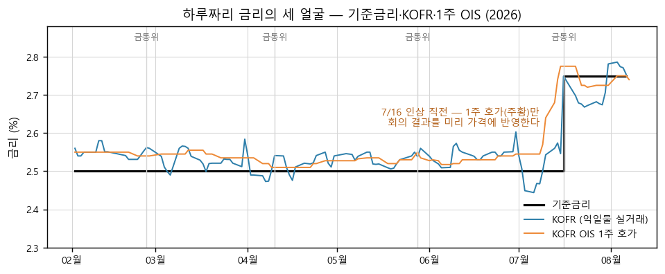
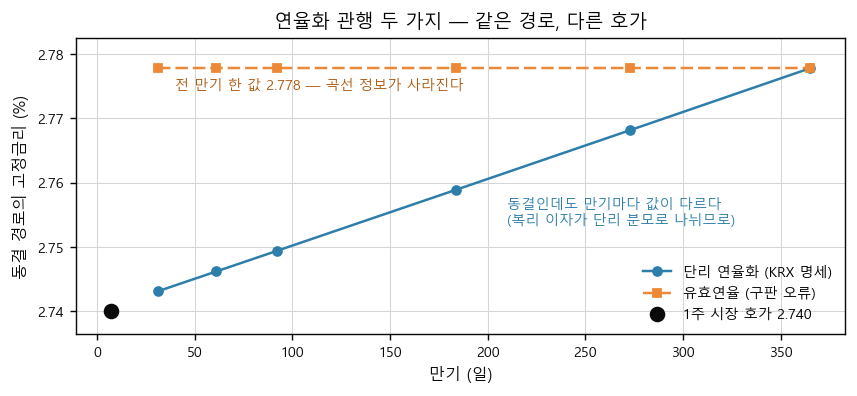
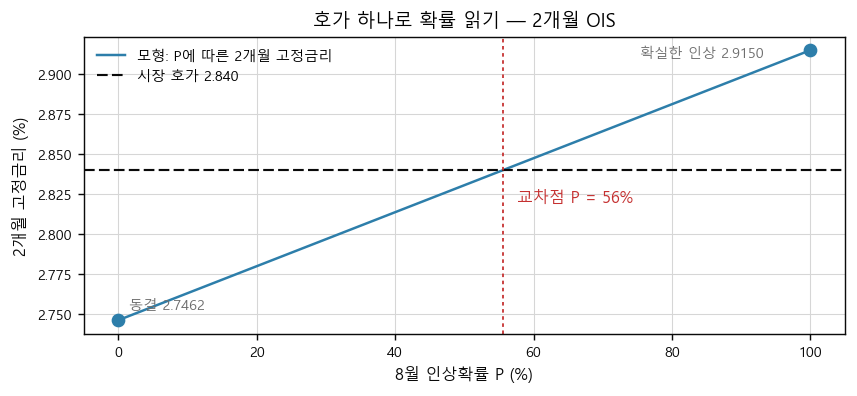
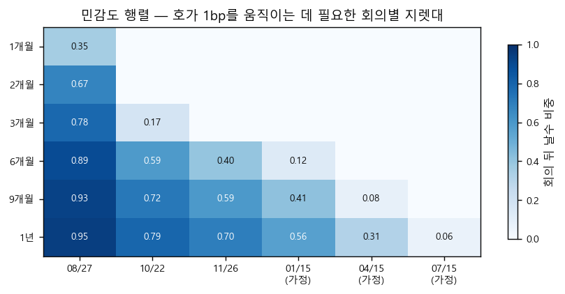
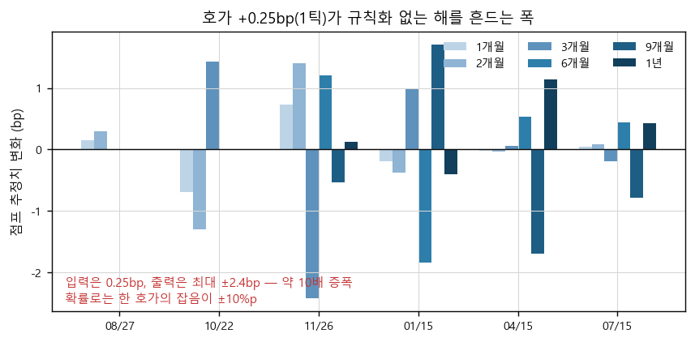
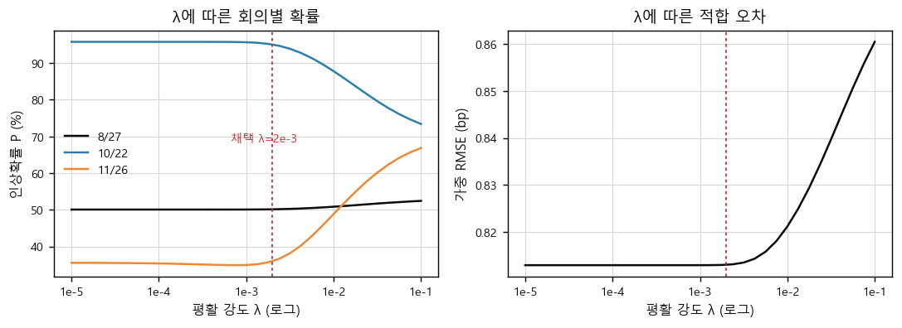
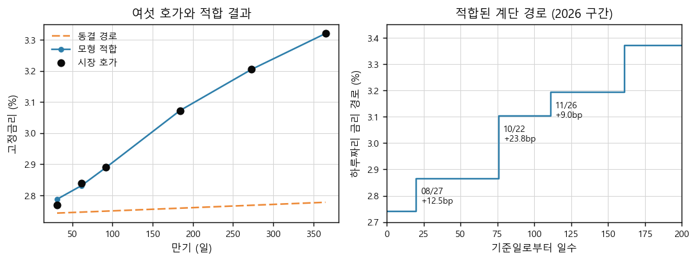
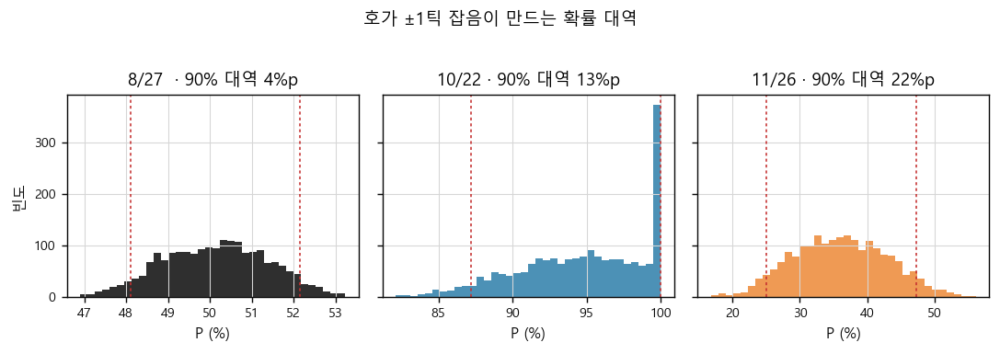
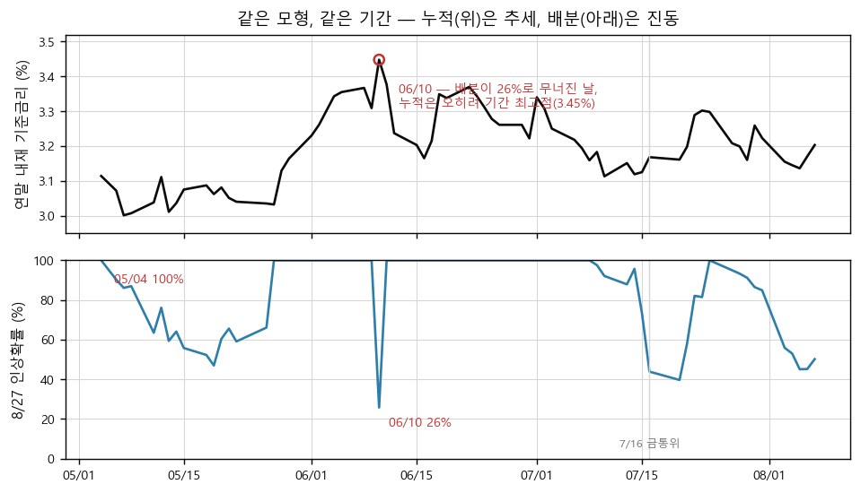
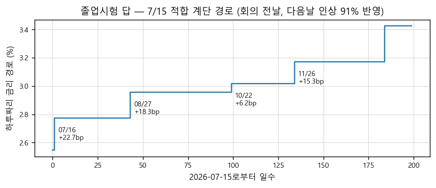

이 문서를 끝까지 따라오면, 어느 날짜든 KOFR OIS 호가 일곱 개·금통위 일정·현재 기준금리만 주어지면 그날 시장이 매긴 회의별 25bp 인상확률을 직접 계산할 수 있게 됩니다. 2026-08-07 기준 "8월 50% · 10월 95% · 11월 36%"라는 결과를 결론으로 외우는 것이 아니라, 그 숫자가 나오는 계산 전체를 손으로 재현하는 것이 목표입니다.
1부 · 재료 — 하루짜리 금리와 OIS 계약. 이 상품이 무엇을 사고파는 것인지, 호가 숫자가 정확히 무엇의 값인지.
2부 · 계단 하나 — 회의 하나만 있을 때. 호가 한 개로 확률을 손으로 읽어 내는 완전한 계산.
3부 · 연립 — 회의 여섯 개. 그냥 풀면 왜 무너지는지, 실전 엔진이 무엇을 어떻게 덧대는지.
4부 · 실전 — 전체 파이프라인, 산출물을 읽는 규율, 한계, 그리고 다른 날짜로 치르는 졸업시험.
본문의 코드 셀 (a)~(h)는 동반 워크북의 셀과 코드·출력이 글자까지 같습니다. 수식 영역을 클릭하면 LaTeX 소스가 복사됩니다.
Part 1
재료 — 하루짜리 금리와 OIS 계약
모형은 3부에나 나옵니다. 그 전에, 우리가 다루는 상품이 정확히 무엇을 사고파는 것인지부터 바닥까지 내려가서 확인합니다.
1.1 하루짜리 금리 — 기준금리·KOFR, 그리고 왜 하필 여기서 출발하는가
"금리인상 기대"를 재려면, 인상되는 그 금리를 매일 거래하는 시장이 필요합니다.
한국은행 금융통화위원회(이하 금통위)는 1년에 여덟 번 모여 기준금리를 정합니다. 지금(2026-08-07)은 2.75%입니다. 우리가 알고 싶은 것은 "다음 회의에서 25bp를 올릴 확률을 시장이 얼마로 보고 있는가"입니다. 여기서 bp(베이시스포인트)는 0.01%p — 25bp 인상이면 2.75%에서 3.00%가 됩니다.
그런데 기준금리 자체는 거래되는 가격이 아니라 정책 선언입니다. 기대를 가격에서 읽으려면, 기준금리를 그대로 따라다니면서 매일 거래로 결정되는 금리가 필요합니다. 그 역할을 하는 것이 KOFR(Korea Overnight Financing Repo rate, 한국 무위험 익일물 금리)입니다 — 국채·통안증권을 담보로 한 하루짜리 환매조건부매매(레포) 거래의 실제 체결 금리를 거래량으로 가중평균해 매일 공시하는 지표입니다. 담보가 있어 신용위험이 거의 없고, 자금의 하루 값이므로 기준금리 언저리에서 움직입니다.
도표 1 · 기준금리 · KOFR · 1주 OIS — 2026년 실측

이 그림에서 볼 것. 검정 계단이 기준금리(7/16에 2.50→2.75%로 인상), 파랑이 KOFR, 주황이 1주 OIS 호가입니다. 두 가지를 확인하세요. ① 파랑(KOFR)은 기준금리에 붙어 다니지만 매일 몇 bp씩 출렁이고, 세금 납부기 수급에 밀리면 7월 초처럼 한참 아래(2.44%)까지 벗어나기도 하며, 인상 당일에야 뜁니다 — 하루짜리 "현물"은 미래를 담지 않습니다. ② 주황(1주 호가)은 7/16 인상 직전에 기준금리보다 먼저 떠오릅니다 — 만기 안에 회의가 든 파생계약만이 미래를 미리 가격에 넣습니다. 이 "미리 넣는 정도"를 정확히 계량하는 것이 이 문서 전체의 주제입니다. (실측: 보조 스크립트 _extra_figures.py)
KOFR는 하루짜리라서 오늘의 자금 사정만 담습니다. "석 달 뒤 금리가 어디 있을까"라는 미래에 대한 견해는 하루짜리 금리 자체가 아니라, 하루짜리 금리를 일정 기간에 걸쳐 주고받기로 약속하는 파생계약의 가격에 담깁니다. 그 계약이 다음 절의 OIS입니다.
왜 콜금리가 아니라 KOFR인가. 무담보 하루짜리인 콜금리도 후보지만, 한국 금융당국은 2021년 KOFR를 공식 무위험 지표금리로 선정했고 파생계약(OIS)이 KOFR를 준거로 상장·거래됩니다. "매일 공시되는 하루짜리 지표 + 그것을 준거로 한 파생 호가"의 짝이 성립하는 것이 KOFR 쪽이므로 출발점도 KOFR입니다.
1.2 OIS 계약의 해부 — 두 다리와 실제 현금흐름
OIS 호가 "2개월 2.84%"는 정확히 무엇의 값인가 — 이 절이 끝나면 한 줄로 답할 수 있습니다.
OIS(Overnight Index Swap, 익일물 지표금리 스왑)는 두 당사자가 같은 원금(명목원금)에 대해 서로 다른 방식의 이자를 교환하는 계약입니다. 만기까지:
다리
지급하는 이자
계약 시점에 아는가
고정다리
미리 합의한 고정금리 K (연율)
안다 — 이 K가 곧 "호가"
변동다리
계약 기간의 KOFR를 매일 복리로 굴린 이자
모른다 — 만기가 되어야 확정
도표 2 · KOFR OIS의 구조 — 2개월(61일) 계약의 예
이 그림에서 볼 것. 위쪽 두 화살표가 교환의 방향입니다 — 파랑(고정 K)은 계약 순간 확정되고, 주황(변동)은 만기까지 61일치 KOFR가 쌓여야 확정됩니다. 아래 타임라인이 핵심 사실 두 가지를 보여 줍니다. 이자는 매일 쌓이지만 돈은 만기에 차액으로 단 한 번 오가고, 원금은 아예 오가지 않습니다. 그래서 이 계약은 원금 부담 없이 "앞으로 두 달간 하루짜리 금리의 평균 수준"에 베팅하는 수단이 됩니다.
숫자로 확인합니다. 명목원금 100억 원, 만기 61일(2개월), 고정 K = 2.84%로 계약했다고 합시다. 편의상 61일 내내 KOFR가 2.74%로 동결됐다고 가정하면:
다리
계산
만기 시 이자
고정다리
100억 × 2.84% × 61/365
47,463,014원
변동다리
100억 × [(1+2.74%/365)⁶¹ − 1]
45,895,059원
정산
고정 지급자가 차액을 지급
−1,567,955원 (고정 지급자 손실)
고정이자를 "K × 경과일/365"의 단순 비례로 계산한 근거는 잠시 뒤 1.4의 연율화 관행에서 확정합니다 — 지금은 결과부터 봅니다. 동결이었는데 고정 지급자가 약 157만 원을 잃었습니다 — 2.84%라는 고정금리가 "동결이면 정당화되지 않는 높은 값"이었다는 뜻입니다. 거꾸로 말하면, 시장이 2.84%에 합의했다는 사실 자체가 "동결로 끝나지는 않을 것"이라는 기대를 담고 있습니다. 이 직관을 다음 절에서 정확한 식으로 바꿉니다.
호가 데이터에 관한 사실 세 가지. ① 이 문서가 쓰는 호가는 한국자금중개(중개회사)가 고시하는 매수·매도 호가의 중간값(MID)으로, 인포맥스 단말로 수신한 값입니다. 체결가가 아니라 호가라는 한계는 4.4에서 다룹니다. ② 만기는 1주·1개월·2개월·3개월·6개월·9개월·1년 등 몇 개 지점만 고시됩니다. ③ 최소 호가 단위(틱)는 0.25bp입니다 — 3.0725% 같은 값이 존재하는 이유이고, 뒤에서 잡음의 크기를 잴 때 이 단위를 씁니다.
1.3 호가는 경로의 평균이다 — 손해 보지 않을 값 찾기
호가 K가 "미래 KOFR 경로의 요약값"이 되는 이유를, 딜러의 손익 계산 하나로 끌어냅니다.
딜러가 되어 봅시다. 누군가 2개월 OIS의 고정금리를 받고 싶다며 가격을 물어 옵니다. 나는 K를 얼마로 불러야 할까요? 계약의 만기 손익은 (고정이자 − 변동이자)이고, 변동이자는 앞으로 61일의 KOFR 경로 에 달려 있습니다. 원금 1원 기준으로 변동다리의 원리금 배율은
입니다. 말로 풀면 — 매일 그날 금리의 하루치(연율을 365로 나눈 것)만큼 원리금이 불어나고, 다음 날은 불어난 원리금 위에 다시 이자가 붙습니다(일복리). 딜러가 손해 보지 않을 K는 고정이자와 변동이자의 기대값이 같아지는 값입니다. 미래 경로는 모르지만, 가능한 경로마다 확률을 매겨 평균한 값(기대값)과 고정이자를 맞추면, 이 가격에 여러 번 계약을 반복할 때 평균 손익이 0이 됩니다. 그보다 높게 부르면 경쟁 딜러에게 고객을 뺏기고, 낮게 부르면 앉아서 잃습니다 — 경쟁이 K를 이 균형값으로 밀어붙입니다.
정확히 말하면 "위험중립 기대값"입니다. 딜러가 평균을 낼 때 쓰는 확률은 통계학자의 예측 확률이 아니라, 헤지 비용과 위험 보상까지 반영된 가격 책정용 확률(위험중립 확률)입니다. 이 구분이 최종 확률의 해석에 어떤 영향을 주는지는 2.4에서 정면으로 다룹니다. 여기서는 "K는 시장이 가격에 쓰는 확률로 평균한 미래 경로의 요약값"이라는 것만 가져가면 됩니다.
정리하면 이렇습니다.
1부의 중간 결론. OIS 호가 K는 "계약 기간 동안 하루짜리 금리(KOFR)가 밟을 경로"에 대한 시장의 확률가중 평균을, 연율 숫자 하나로 압축한 값이다. 그러므로 K에서 거꾸로 경로에 대한 확률을 풀어낼 수 있다 — 이것이 이 방법론 전체의 뼈대다.
1.4 연율화 관행 — 20%p를 갈랐던 한 줄 · 셀 (a)
"복리로 쌓인 이자를 어떻게 연율 숫자 하나로 적는가"는 사소해 보이지만, 이 모형에서 실제로 8월 확률 20%p를 갈랐던 지점입니다.
변동다리 배율은 61일치 복리 곱입니다. 이것과 비교할 고정금리 K는 "연율 %"라는 단위로 고시됩니다. 그렇다면 곱을 연율로 바꾸는 규칙 — 연율화 관행 — 이 필요합니다. 후보가 둘 있습니다.
읽는 법: 대괄호 안은 "원금 1원이 D일 동안 복리로 불어난 순수 이자"입니다. 그것을 D일로 나눠 하루치로 만들고 365를 곱해 연율로 폅니다 — 이자 자체는 복리로 쌓되, 연율로 펼 때는 단순 비례(단리)로 펴는 방식입니다. 실제 KRX의 KOFR OIS 상품 명세가 이 방식입니다(Act/365: 실제 경과일수를 세고 1년을 365일로 치는 일수 계산 관행).
또 하나의 후보는 "이 계약의 수익률을 1년짜리 복리 수익률로 환산하면 몇 %인가"로 적는 유효연율 방식입니다: . 채권 수익률 비교에는 자연스러운 방식이라 금리 실무자의 손이 먼저 가는 쪽이기도 합니다. 문제는 — 이 모형의 구판이 실제로 이 방식을 썼고, 그것이 오류였다는 것입니다.
어느 쪽이 맞는지는 논쟁이 아니라 검증으로 정합니다. 1주 구간에는 금통위가 없으므로(다음 회의 8/27은 20일 뒤), "1주 내내 지금 수준 그대로"라는 경로를 넣으면 모형이 1주 호가를 그대로 재현해야 합니다. 아래 셀이 그 검증입니다.
셀 (a) · 연율화 두 관행 — 1주 호가 재현 검증
# 셀 (a) · 연율화 두 관행 — 1주 호가 재현 검증
# 경로가 일정 구간별로 (일수, 금리%) 로 주어질 때 복리 곱의 로그를 계산
def log_growth(segments):
return sum(n * math.log(1 + r / 100 / 365) for n, r in segments)
def k_simple(segments, days):
# KRX KOFR OIS 명세: K = (365/D) * [곱 - 1] (Act/365 단리 연율화)
return (math.exp(log_growth(segments)) - 1) * 365 / days * 100
def k_effective(segments, days):
# 구판의 잘못된 관행: K = 곱^(365/D) - 1 (유효연율)
return (math.exp(log_growth(segments) * 365 / days) - 1) * 100
# 검증 1 — 1주 동결 경로가 1주 호가를 재현하는가
r0 = QUOTES["1주"]
flat_1w = [(7, r0)]
print(f"1주 시장 호가 : {QUOTES['1주']:.4f}%")
print(f"단리 연율화 (KRX) : {k_simple(flat_1w, 7):.4f}% <- 재현")
print(f"유효연율 (구판 오류): {k_effective(flat_1w, 7):.4f}% <- 3.8bp 초과")
# 검증 2 — 동결 경로의 만기별 고정금리 (두 관행)
print("\n동결 경로(전 구간 " + f"{r0:.3f}%)의 만기별 고정금리:")
print("만기 일수 단리(KRX) 유효연율")
hold_simple, hold_eff = {}, {}
for t in FIT_TENORS:
d_ = DAYS[t]
hold_simple[t] = k_simple([(d_, r0)], d_)
hold_eff[t] = k_effective([(d_, r0)], d_)
print(f"{t:<5s} {d_:>4d} {hold_simple[t]:.4f}% {hold_eff[t]:.4f}%")
fig, ax = plt.subplots(figsize=(6.8, 3.2))
xs = [DAYS[t] for t in FIT_TENORS]
ax.plot(xs, [hold_simple[t] for t in FIT_TENORS], color=CADBLUE, marker="o",
ms=5, label="단리 연율화 (KRX 명세)")
ax.plot(xs, [hold_eff[t] for t in FIT_TENORS], color=ORANGE, marker="s",
ms=5, ls=(0, (5, 2)), label="유효연율 (구판 오류)")
ax.scatter([7], [QUOTES["1주"]], s=60, color=INK, zorder=5, label="1주 시장 호가 2.740")
ax.annotate("동결인데도 만기마다 값이 다르다\n(복리 이자가 단리 분모로 나뉘므로)",
xy=(210, 2.7535), fontsize=8, color=CADBLUE)
ax.annotate("전 만기 한 값 2.778 — 곡선 정보가 사라진다",
xy=(40, 2.7745), fontsize=8, color="#B05A10")
ax.set_ylim(2.7365, 2.7825)
ax.set_xlabel("만기 (일)")
ax.set_ylabel("동결 경로의 고정금리 (%)")
ax.set_title("연율화 관행 두 가지 — 같은 경로, 다른 호가")
ax.legend(loc="lower right")
save(fig, "03-annualization-conventions.png")
plt.show()
이 셀은 위 두 연율화 식을 그대로 코드로 옮기고(k_simple·k_effective), 두 가지를 검증합니다 — ① 동결 경로가 1주 호가 2.740%를 재현하는가, ② 동결 경로에서 만기별 고정금리가 어떤 모양이 되는가. 데이터는 셋업 셀에 내장된 2026-08-07 실제 호가입니다.
실행 결과
1주 시장 호가 : 2.7400%
단리 연율화 (KRX) : 2.7406% <- 재현
유효연율 (구판 오류): 2.7778% <- 3.8bp 초과
동결 경로(전 구간 2.740%)의 만기별 고정금리:
만기 일수 단리(KRX) 유효연율
1개월 31 2.7431% 2.7778%
2개월 61 2.7462% 2.7778%
3개월 92 2.7494% 2.7778%
6개월 184 2.7589% 2.7778%
9개월 273 2.7682% 2.7778%
1년 365 2.7778% 2.7778%
도표 3 · 연율화 관행 두 가지 — 같은 동결 경로, 다른 호가

이 그림에서 볼 것. 검정 점이 1주 시장 호가 2.740%입니다. 파랑(단리, KRX 명세)은 이 점을 통과한 뒤 만기를 따라 2.778%까지 완만히 올라가고, 주황(유효연율, 구판 오류)은 전 만기가 2.778% 한 값으로 평평합니다. 유효연율은 1주 호가부터 3.8bp 어긋납니다 — 시장 호가 자체가 어느 관행이 맞는지 심판해 준 셈입니다. (셀 (a) 산출)
파랑 선이 만기를 따라 올라가는 이유를 짚고 갑니다. 이자는 복리로 쌓이므로 만기가 길수록 "이자의 이자"가 커지는데, 연율화는 단리(단순 나눗셈)로 펴니 그 몫이 고정금리에 얹힙니다. 즉 단리 관행에서는 완전한 동결 기대라도 곡선이 살짝 우상향합니다. 이 "동결 눈금"의 모양을 모르면, 곡선의 우상향을 전부 인상 기대로 오독하거나(과대) 반대로 눈금이 평평하다고 착각해 인상 기대를 놓칩니다(과소).
실화 — 구판이 치른 수업료. 이 모형의 구판은 유효연율을 썼습니다. 그러면 동결 눈금이 전 만기 평평해져서, 실제 곡선의 완만한 우상향 중 "복리-단리 차이" 몫까지 인상 기대가 아닌 것으로 처리됩니다. 결과: 8월 인상확률이 30%로 눌려 나왔습니다(교정 후 50%). 잘못을 잡아낸 것은 별도 경로로 같은 문제를 푼 다른 분석의 교차 감사였고, 관행을 KRX 명세대로 고치자 여섯 호가의 적합 오차(RMSE)가 1.5bp에서 0.8bp로 반토막 났습니다 — 시장 데이터가 "이쪽이 맞다"고 답해 준 것입니다. 교훈: 가격 엔진을 만들면 반드시 계약 명세를 대조하고, 벤치마크 상품(여기서는 1주 호가) 재현 테스트를 먼저 돌려야 합니다. 내부 논리가 아무리 정합적이어도 단위 관행이 틀리면 전부 틀립니다.
이 가격식으로 실무자가 하는 일. K 식은 이 문서에서는 확률 추출의 재료지만, 데스크에서는 그 자체로 매일 쓰입니다.
① 호가 정합성 점검. 고시된 OIS 호가를 자기 경로 가정으로 재가격해 이상 호가(스테일·오타)를 걸러냅니다.
② 캐리 계산. 고정 수취 포지션의 "가만히 있을 때 손익" = 고정 K − 실현 KOFR 복리 — 위 100억 예제의 계산 그대로입니다.
③ 헤지 비율 산출. 예금·대출·채권의 단기 금리 익스포저를 OIS로 상쇄할 때 두 다리의 이자 산식을 정확히 맞춰야 합니다.
한국 채권 운용 실무에서는 ①을 이 모형의 일별 재실행 전에 자동으로 돌리는 것이 표준 절차입니다.
Part 2
계단 하나 — 한 회의의 확률
회의가 하나뿐인 세상에서 확률을 손으로 완전하게 계산합니다. 3부의 연립은 이 계산의 반복일 뿐입니다.
2.1 금리는 회의 날에만 움직인다 — 계단 경로
미래 KOFR 경로는 무한히 다양할 수 있는데, 어떻게 미지수 몇 개로 줄이는가.
K가 "미래 경로의 확률가중 평균"이라는 것까지 왔습니다(1.3). 그런데 61일짜리 경로는 그 자체로 61개의 미지수입니다. 이대로는 아무것도 풀 수 없습니다. 여기서 이 방법론의 결정적 단순화가 들어옵니다: 하루짜리 금리는 기준금리에 붙어 다니고(도표 1), 기준금리는 금통위 회의 날에만 바뀐다. 그렇다면 미래 경로를 "회의 날에만 점프하는 계단"으로 쓸 수 있습니다.
기호를 하나씩 풀면 — 는 기준일로부터의 일수, 는 경로의 시작 수준(다음 절), 는 k번째 금통위까지의 일수, 는 그 회의에서의 점프 폭(우리가 구할 미지수), 은 조건이 참이면 1, 아니면 0인 지시함수입니다. 즉 "s일째 금리 = 시작 수준 + 그때까지 지나온 회의들의 점프 합"입니다. 미지수가 61개에서 회의 수만큼으로 줄었습니다.
도표 4 · 한 회의의 두 갈래 — 계단 경로와 기대 경로
이 그림에서 볼 것. 회의 전에는 경로가 하나뿐입니다(검정). 회의를 지나면 인상(파랑, 확률 P)과 동결(주황, 확률 1−P) 두 갈래로 갈라집니다. 호가에 반영되는 것은 두 갈래 중 하나가 아니라 그 확률가중 평균인 빨간 기대 경로 — 점프 폭으로 쓰면 Δ = P × 25bp입니다. 그래서 적합으로 얻는 Δ는 "그 회의에서 기대되는 평균 점프"이고, 이를 25bp로 나누면 확률이 됩니다.
이 그림이 Δ와 P의 관계를 이미 다 말해 줍니다. 회의 결과가 "동결(0bp) 아니면 +25bp" 둘 중 하나라면, 기대 점프는
입니다. 남은 일은 Δ를 호가에서 구해 내는 것뿐입니다. 그 전에, 계단의 출발 높이 부터 확정해야 합니다.
2.2 경로의 시작점 r₀ — 세 후보의 비교
"지금 수준"이라는 말에는 후보가 셋이나 있습니다 — 그리고 셋 중 무엇을 고르느냐가 앞 회의 확률을 직접 흔듭니다.
계단 경로의 시작 수준 r₀는 "회의 전까지 하루짜리 금리가 머무는 높이"입니다. 자연스러운 후보가 셋 있습니다.
후보
8/7 값
장점
결정적 결함
① 기준금리
2.750%
정책의 공식 수준
KOFR는 기준금리에 정확히 붙지 않는다 — 담보 수급에 따라 몇 bp 아래·위에서 거래된다(도표 1). 이 베이시스(괴리)를 무시하면 그만큼이 통째로 첫 회의의 Δ로 오인된다.
② 당일 KOFR
2.754% (전일 공시)
실거래 수준
하루짜리 실거래는 분기말·세금기 수급으로 하루 만에 수 bp씩 튄다(도표 1의 7월 초 2.44%). 그날의 우연한 수급이 그대로 확률에 들어간다. 게다가 당일치는 다음 영업일 오전에야 공시된다.
③ 1주 OIS 호가
2.740%
같은 상품군의 "가까운 미래 평균"
1주 안에 회의가 있으면 못 쓴다 — 그때만 ②로 폴백한다.
운영 모형의 선택은 ③입니다. 논리는 내부 정합성입니다 — 우리가 풀려는 대상이 "OIS 호가"이므로, 경로의 시작 수준도 같은 OIS 시장이 매긴 값으로 잡아야 OIS 특유의 미세한 프리미엄·베이시스가 시작점에 흡수되고, 회의 점프 Δ에는 회의에 관한 정보만 남습니다. 실제로 8/7의 1주 호가는 2.740%로 기준금리보다 1bp 낮습니다 — ①을 썼다면 이 −1bp가 8월 회의의 Δ에 섞여 확률을 왜곡했을 것입니다.
단서 조항이 실전에서 작동합니다. ③의 결함 칸을 그냥 지나치지 마세요. 1주 구간(기준일+1 ~ 기준일+7)에 회의가 끼어 있으면, 1주 호가는 이미 "회의 전 며칠 + 회의 후 며칠의 평균"이라 인상 기대가 섞인 값입니다. 이걸 시작점으로 쓰면 인상 기대를 시작 수준에 넣어 놓고 다시 인상확률을 재는 순환이 됩니다. 이때는 ②(최근 KOFR 공시값)로 폴백합니다 — 4.5의 졸업시험(7/15, 다음날이 회의)이 정확히 이 상황이고, 이 규칙을 아는지가 시험의 핵심 함정입니다.
2.3 2개월 호가 손계산 — 확률 56%가 나오기까지 · 셀 (b)
여기가 이 문서의 심장입니다. 이 절의 계산을 재현할 수 있으면 나머지는 규모의 문제일 뿐입니다.
재료가 다 모였습니다. 2026-08-07 기준: r₀ = 2.740%(1주 호가), 다음 회의 8/27(20일 뒤), 2개월 호가 2.840%(만기 61일 — 8/7의 2개월 뒤인 10/7까지). 2개월 만기 안에 회의는 8/27 하나뿐이므로, 미지수는 Δ 하나입니다. 계산은 세 걸음입니다.
걸음 1 — 동결 눈금. Δ = 0(동결)이면 61일 내내 2.740%입니다. 셀 (a)의 단리 연율화로 이 경로의 고정금리를 계산하면 2.7462% — 시장 호가가 이보다 높은 만큼이 "인상 기대의 몫"입니다.
걸음 2 — 확실한 인상 눈금. Δ = 25bp(인상 확정)이면 처음 20일은 2.740%, 나머지 41일은 2.990%입니다. 이 경로의 고정금리는 2.9150%입니다. 동결 눈금과의 차이는 16.9bp — 25bp가 아닙니다. 회의 앞 20일은 인상의 영향을 받지 않으므로, 만기 평균에는 점프가 대략 "회의 뒤 날수 비중"(41/61 ≈ 2/3)만큼만 반영되기 때문입니다. 이 비중이 3부에서 민감도라는 이름으로 주인공이 됩니다.
걸음 3 — 시장의 위치 읽기. 시장 호가 2.840%는 동결 눈금보다 9.4bp 위, 두 눈금 사이의 약 56% 지점에 있습니다.
이 식이 도표 4의 기하 그대로입니다 — 시장 호가가 동결 갈래와 인상 갈래 사이 어디쯤에 떠 있는지의 위치가 곧 확률입니다. 아래 셀이 이 세 걸음을 코드로 옮긴 것이고, 같은 계산을 1개월 호가로도 반복합니다.
이 한 줄 독해로 실무자가 하는 일. 3부의 엔진 없이도 이 식만으로 되는 일이 셋 있습니다.
① 30초 간이 확률. 회의 아침, 1·2개월 호가 두 개와 동결 눈금만으로 오늘 회의의 반영도를 암산 수준으로 뽑습니다.
② 데스크 공용어. "2개월이 동결 눈금 위로 9bp 떠 있다"는 말이 곧 확률 진술이 됩니다 — 팀 안에서 확률을 놓고 다툴 때 근거가 호가 숫자로 내려갑니다.
③ 엔진 검산. 3부 엔진의 앞 회의 산출이 이 간이 독해와 크게 어긋나면(±10%p 이상) 데이터나 코드부터 의심합니다.
한국 채권 데스크에서는 ①을 금통위 당일 아침 루틴으로 쓰는 경우가 많습니다.
셀 (b) · model_rate — 계단 경로의 가격 함수와 2개월 손계산
# 셀 (b) · model_rate — 계단 경로를 넣으면 고정금리가 나오는 함수
def model_rate(asof, days, r0, nodes, deltas):
# 경로를 (일수, 금리) 구간 목록으로 자른 뒤 셀 (a)의 단리 연율화 적용
segments, prev, cur = [], 0, r0
for b, dlt in sorted(((n - asof).days, dl) for n, dl in zip(nodes, deltas)):
if b >= days:
break # 만기 밖의 회의는 이 호가와 무관
if b > prev:
segments.append((b - prev, cur))
prev = b
cur += dlt # 회의를 지나며 금리가 점프
segments.append((days - prev, cur))
return k_simple(segments, days)
# ── 2개월 호가(61일) 손계산: 회의(8/27)는 20일째, 그 뒤가 41일
r0 = QUOTES["1주"] # 경로 시작 수준 = 1주 호가 2.740
nodes_1 = [MEETINGS_2026[0]] # 8/27 하나만 고려
D2 = DAYS["2개월"]
m_aug = (MEETINGS_2026[0] - ASOF).days
print(f"2개월 만기 {D2}일 · 회의까지 {m_aug}일 · 회의 뒤 {D2 - m_aug}일")
hold = model_rate(ASOF, D2, r0, nodes_1, np.array([0.0])) # 동결 경로
full = model_rate(ASOF, D2, r0, nodes_1, np.array([0.25])) # 25bp 인상 경로
mkt = QUOTES["2개월"]
p_2m = (mkt - hold) / (full - hold)
print(f"동결 경로의 2개월 고정금리 : {hold:.4f}%")
print(f"인상 경로의 2개월 고정금리 : {full:.4f}% (동결 대비 +{(full-hold)*100:.1f}bp)")
print(f"시장 호가 : {mkt:.4f}% (동결 대비 +{(mkt-hold)*100:.1f}bp)")
print(f"=> 2개월 호가 하나로 읽은 8월 인상확률 P = {p_2m:.1%}")
# 같은 계산을 1개월 호가로
D1 = DAYS["1개월"]
hold1 = model_rate(ASOF, D1, r0, nodes_1, np.array([0.0]))
full1 = model_rate(ASOF, D1, r0, nodes_1, np.array([0.25]))
p_1m = (QUOTES["1개월"] - hold1) / (full1 - hold1)
print(f"\n1개월(31일·회의 뒤 11일)로 같은 계산: 동결 {hold1:.4f} · 인상 {full1:.4f}"
f" · 시장 {QUOTES['1개월']:.4f} => P = {p_1m:.1%}")
fig, ax = plt.subplots(figsize=(6.8, 3.2))
ps = np.linspace(0, 1, 101)
line = [model_rate(ASOF, D2, r0, nodes_1, np.array([0.25 * p])) for p in ps]
ax.plot(ps * 100, line, color=CADBLUE, label="모형: P에 따른 2개월 고정금리")
ax.axhline(mkt, color=INK, lw=1.2, ls=(0, (5, 2)), label=f"시장 호가 {mkt:.3f}")
ax.axvline(p_2m * 100, color=CADRED, lw=1.0, ls=(0, (2, 2)))
ax.annotate(f"교차점 P = {p_2m:.0%}", xy=(p_2m * 100, mkt),
xytext=(8, -18), textcoords="offset points", color=CADRED, fontsize=9)
ax.scatter([0, 100], [hold, full], s=45, color=CADBLUE, zorder=5)
ax.annotate(f"동결 {hold:.4f}", xy=(0, hold), xytext=(6, 6),
textcoords="offset points", fontsize=8, color=MUTE)
ax.annotate(f"확실한 인상 {full:.4f}", xy=(100, full), xytext=(-96, -4),
textcoords="offset points", fontsize=8, color=MUTE)
ax.set_xlabel("8월 인상확률 P (%)")
ax.set_ylabel("2개월 고정금리 (%)")
ax.set_title("호가 하나로 확률 읽기 — 2개월 OIS")
ax.legend(loc="upper left")
save(fig, "05-two-month-readout.png")
plt.show()
model_rate가 이 방법론의 가격 함수입니다 — 계단 경로(r₀, 회의일, Δ들)를 받아 구간별로 자른 뒤 셀 (a)의 단리 연율화를 적용합니다. 이후 3부의 모든 계산이 이 함수 하나를 반복 호출합니다.
실행 결과
2개월 만기 61일 · 회의까지 20일 · 회의 뒤 41일
동결 경로의 2개월 고정금리 : 2.7462%
인상 경로의 2개월 고정금리 : 2.9150% (동결 대비 +16.9bp)
시장 호가 : 2.8400% (동결 대비 +9.4bp)
=> 2개월 호가 하나로 읽은 8월 인상확률 P = 55.6%
1개월(31일·회의 뒤 11일)로 같은 계산: 동결 2.7431 · 인상 2.8320 · 시장 2.7700 => P = 30.3%
도표 5 · 호가 하나로 확률 읽기 — 2개월 OIS

이 그림에서 볼 것. 파랑 선이 "확률이 P라면 2개월 고정금리는 얼마여야 하는가"의 모형값, 검정 점선이 실제 시장 호가 2.840%입니다. 두 선의 교차점(빨강)이 P = 56%. 양 끝점이 걸음 1·2의 두 눈금(2.7462 / 2.9150)입니다. 파랑 선이 거의 완전한 직선이라는 것도 기억해 두세요 — 3.4에서 "가우스-뉴턴 첫 스텝이 답의 대부분을 만드는" 이유가 됩니다. (셀 (b) 산출)
셀 (b)의 마지막 줄이 다음 단계의 문을 엽니다. 1개월 호가(2.770%)로 똑같이 계산하면 P = 30% — 2개월의 56%와 다릅니다. 같은 회의의 확률이 호가마다 다르게 읽힌다는 것은 각 호가에 그 호가만의 잡음(스프레드 안 위치·수급·스테일)이 붙어 있다는 뜻입니다. 하나만 믿을 이유가 없으므로, 실전 모형은 여섯 호가를 동시에 만족시키는 Δ를 찾습니다 — 그것이 3부이고, 그 결과가 8월 50%입니다.
2.4 이 확률의 정체 — 무엇이고 무엇이 아닌가
"P = 56%"라고 적는 순간 따라붙는 세 가지 질문을 미리 끝냅니다.
질문 1 — 왜 25bp 격자인가
P = Δ/25bp라는 변환은 "회의 결과는 동결 아니면 ±25bp"라는 가정 위에 서 있습니다. 근거는 한국은행의 실제 행동입니다 — 2010년 이후 기준금리 변경은 코로나 국면의 50bp 인하(2020-03) 단 한 번을 빼면 전부 25bp 단위였고, 인상은 예외 없이 25bp였습니다(2008~09년 금융위기에는 50~100bp 인하도 있었으므로, 위기 국면에서는 격자 가정 자체를 다시 봐야 합니다). 다만 이것은 관행이지 법칙이 아닙니다. 만약 시장이 "50bp 인상 25% 확률"을 가격에 넣는다면 Δ = 12.5bp가 되어 "25bp 인상 50%"와 구분되지 않습니다 — Δ는 식별되지만, Δ를 확률로 해석하는 층은 격자 가정에 의존합니다. 그래서 Δ(bp)와 P(%)를 항상 나란히 표기합니다.
질문 2 — 이것은 예보 확률인가
아닙니다. 1.3의 경고 그대로, 이 확률은 위험중립 확률 — 시장이 가격을 매길 때 쓰는, 위험 보상이 섞인 확률입니다. 인상이 두려운 쪽이 보험료를 더 낼 의향이 있으면 실제 믿음보다 확률이 높게 찍힐 수 있습니다. 다행히 이 왜곡은 만기가 짧을수록 작습니다 — 두 달짜리 계약의 위험 보상은 크지 않습니다. 그래도 원칙은: 이 숫자는 "시장이 가격에 반영한 정도"이지 "실제로 일어날 빈도"가 아니며, 예보로 쓰려면 서베이(채권시장 심리지수) 같은 독립 지표와 교차 검증해야 합니다. 이 프로젝트의 본 리포트가 그 교차 검증(2013~2026년 124회 백테스트 포함)을 수행합니다.
질문 3 — 인하 가능성은 어디 갔는가
Δ는 부호가 자유롭습니다 — 시장이 인하를 가격에 넣으면 Δ가 음수로 적합되고, 그때는 −Δ/25bp를 인하확률로 읽습니다. 확률로 변환할 때 [0, 1] 구간을 벗어나는 값은 구간 끝으로 자릅니다(Δ = 28bp → P = 100%). "인상 50% + 인하 10%"처럼 양쪽이 동시에 있는 분포는 Δ 하나(순기대치)로는 분리되지 않습니다 — 이 방법론의 해상도 한계이며, 4.4의 한계 표에 다시 등장합니다.
Part 3
연립 — 여섯 호가, 여섯 회의
회의가 여섯 개가 되는 순간 이 문제는 "역문제"가 됩니다 — 잘 풀리는 방향과 안 풀리는 방향이 갈리고, 그 구분이 모든 설계를 결정합니다.
3.1 어느 호가가 어느 회의를 보는가 — 민감도 행렬 · 셀 (c)
2.3의 "회의 뒤 날수 비중 41/61"을 모든 (호가, 회의) 짝에 대해 한꺼번에 계산하면, 이 문제의 지도가 나옵니다.
이제 실전 규모입니다. 기준일로부터 1년 안에 확정된 금통위가 셋(8/27·10/22·11/26) 있고, 2027년 일정은 아직 공표 전이므로 분기 간격의 가정 노드 셋(1/15·4/15·7/15)을 세워 1년 만기 호가가 보는 "그 너머 기대"를 받아 냅니다. 가정 노드의 날짜 자체(15일)는 임의 선택입니다 — 하루 이틀 옮겨도 민감도가 거의 변하지 않아 결과에 영향이 없고, 중요한 것은 "1년 만기가 보는 그 너머 기대를 받아 줄 자리가 분기 간격으로 있다"는 사실뿐입니다. 미지수는 Δ 여섯 개, 방정식은 1개월~1년 호가 여섯 개입니다.
왜 1년 만기까지만 쓰는가. 호가는 18개월·2년·3년까지 고시되지만 적합에는 1년까지만 씁니다. 1년 밖 호가는 민감도의 대부분이 일정도 없는 2027년 이후 회의들에 걸리는데, 그 몫을 받을 가정 노드를 늘릴수록 미지수만 늘고 식별은 나빠집니다. 게다가 만기가 길수록 기간프리미엄(§3.3)이 커져 "기대"만 분리하기 어려워집니다 — 정보가 늘기보다 오염이 느는 구간이라 잘라냅니다.
각 호가가 각 회의에 얼마나 반응하는지 — 2.3 걸음 2의 논리를 일반화하면, 만기 D일 호가의 회의 k에 대한 민감도(그 회의 점프가 호가에 전달되는 비율)는 근사적으로
즉 "만기 안에서 그 회의 뒤에 남는 날수의 비중"입니다. 이 값을 6×6으로 모두 계산한 것이 민감도 행렬(수학 용어로는 자코비안 — 출력들의 입력들에 대한 미분을 모은 행렬)이고, 아래 셀이 그것입니다.
셀 (c) · 민감도 행렬 — 성분 = 만기 내 회의-이후 날수 비중
# 셀 (c) · 민감도 행렬 — 성분 = 만기 내 회의-이후 날수 비중
ALL_NODES = MEETINGS_2026 + NODES_2027
J_frac = np.zeros((len(FIT_TENORS), len(ALL_NODES)))
for i, t in enumerate(FIT_TENORS):
for k, n in enumerate(ALL_NODES):
b = (n - ASOF).days
if b < DAYS[t]:
J_frac[i, k] = (DAYS[t] - b) / DAYS[t]
print("민감도 행렬 (행=만기, 열=회의):")
hdr = " " + " ".join(n.strftime("%y/%m/%d") for n in ALL_NODES)
print(hdr)
for i, t in enumerate(FIT_TENORS):
print(f"{t:<6s} " + " ".join(f"{v:8.3f}" for v in J_frac[i]))
d3, b_oct = DAYS["3개월"], (MEETINGS_2026[1] - ASOF).days
print(f"\n예: 3개월({d3}일) 호가의 10/22 민감도 = ({d3}-{b_oct})/{d3}"
f" = {(d3-b_oct)/d3:.3f}")
print("=> 10월 인상 25bp는 3개월 호가를 약 " f"{25*(d3-b_oct)/d3:.1f}bp만 움직인다")
fig, ax = plt.subplots(figsize=(6.8, 3.4))
im = ax.imshow(J_frac, cmap="Blues", vmin=0, vmax=1, aspect="auto")
ax.set_xticks(range(len(ALL_NODES)),
[n.strftime("%m/%d") + ("\n(가정)" if n.year == 2027 else "")
for n in ALL_NODES], fontsize=8)
ax.set_yticks(range(len(FIT_TENORS)), FIT_TENORS, fontsize=8)
for i in range(len(FIT_TENORS)):
for k in range(len(ALL_NODES)):
v = J_frac[i, k]
if v > 0:
ax.text(k, i, f"{v:.2f}", ha="center", va="center", fontsize=7.5,
color="white" if v > 0.55 else INK)
ax.set_title("민감도 행렬 — 호가 1bp를 움직이는 데 필요한 회의별 지렛대")
ax.grid(False)
fig.colorbar(im, ax=ax, shrink=0.85, label="회의 뒤 날수 비중")
save(fig, "06-coverage-jacobian.png")
plt.show()
민감도 행렬 (행=만기, 열=회의):
26/08/27 26/10/22 26/11/26 27/01/15 27/04/15 27/07/15
1개월 0.355 0.000 0.000 0.000 0.000 0.000
2개월 0.672 0.000 0.000 0.000 0.000 0.000
3개월 0.783 0.174 0.000 0.000 0.000 0.000
6개월 0.891 0.587 0.397 0.125 0.000 0.000
9개월 0.927 0.722 0.593 0.410 0.081 0.000
1년 0.945 0.792 0.696 0.559 0.312 0.063
예: 3개월(92일) 호가의 10/22 민감도 = (92-76)/92 = 0.174
=> 10월 인상 25bp는 3개월 호가를 약 4.3bp만 움직인다
도표 6 · 민감도 행렬 — 이 문제의 지도

이 그림에서 볼 것. 진할수록 그 호가가 그 회의를 잘 봅니다. 세 가지 구조를 읽으세요. ① 8/27 열은 위부터 아래까지 진합니다 — 특히 1·2개월은 오직 이 회의만 봅니다(전용 호가). ② 뒤 회의로 갈수록 열이 옅어집니다 — 10/22를 단독으로 보는 호가는 없고, 3개월이 0.17로 살짝 볼 뿐입니다. ③ 마지막 27-07/15 열은 1년 호가가 0.06으로 겨우 스칩니다 — 사실상 아무도 안 보는 방향입니다. 이 세 구조가 각각 "8월 확률은 단단하다", "뒷 회의는 성기게 읽어라", "2027 노드는 수축으로 붙들어야 한다"로 이어집니다. (셀 (c) 산출)
3.2 그냥 풀면 — 특이성과 잡음 증폭 · 셀 (d)
"방정식 여섯 개, 미지수 여섯 개면 유일해가 나온다"는 직관이 여기서 두 번 부서집니다.
첫 번째 균열: 도표 6에서 1개월 행과 2개월 행은 8/27 열 하나만 값이 있습니다. 방정식 두 개가 같은 미지수 하나를 재고 있으니, 서로 독립인 방정식은 사실상 다섯 개뿐입니다. 이런 상황을 수학에서는 행렬의 계수(rank — 행렬이 실제로 구분해낼 수 있는 독립 방향의 개수)가 6이 아니라 5라고 말합니다. 계수가 미지수보다 작으면 연립방정식의 해는 유일하지 않습니다 — "정확해"가 무한히 많고, 컴퓨터로 그냥 풀면(np.linalg.solve) 특이행렬 오류이거나 해가 폭주합니다.
둘째 균열은 더 실질적입니다. 유일하지 않은 해들 중 가장 얌전한 것(최소노름 해 — 가능한 해 가운데 크기가 가장 작은 것)을 골라도, 입력의 작은 잡음이 출력에서 크게 증폭됩니다. 이유는 민감도의 산수입니다: 민감도 0.174짜리 방향에서 호가 1bp를 설명하려면 Δ가 1/0.174 ≈ 5.7bp 움직여야 합니다 — 확률로는 23%p입니다. 아래 셀이 두 균열을 모두 실측합니다: 행렬의 특이값(행렬이 각 방향을 얼마나 잘 구분하는지의 세기 목록 — 0이면 그 방향을 전혀 구분 못 함)을 확인하고, 호가를 1틱(0.25bp)씩 흔들어 해가 얼마나 널뛰는지를 봅니다.
셀 (d) · 특이성 확인 + 최소노름 해의 1틱 섭동 실험
# 셀 (d) · 특이성 확인 + 최소노름 해의 1틱 섭동 실험 (규칙화 전부 끄고)
def solve_naive(quotes_dict):
# 규칙화 없는 최소제곱 (뉴턴 반복 + lstsq = 최소노름 해)
yv = np.array([quotes_dict[t] for t in FIT_TENORS])
days_l = [DAYS[t] for t in FIT_TENORS]
deltas, eps = np.zeros(len(ALL_NODES)), 1e-4
for _ in range(8):
f0 = np.array([model_rate(ASOF, d_, r0, ALL_NODES, deltas) for d_ in days_l])
J = np.zeros((len(days_l), len(ALL_NODES)))
for k in range(len(ALL_NODES)):
dd = deltas.copy(); dd[k] += eps
J[:, k] = (np.array([model_rate(ASOF, d_, r0, ALL_NODES, dd)
for d_ in days_l]) - f0) / eps
step, *_ = np.linalg.lstsq(J, yv - f0, rcond=None)
deltas = deltas + step
if np.max(np.abs(step)) < 1e-9:
break
return deltas, J
base_dl, J = solve_naive(QUOTES)
sv = np.linalg.svd(J, compute_uv=False)
print("민감도 행렬의 특이값:", " ".join(f"{s:.3f}" for s in sv))
print("=> 여섯째 특이값이 0 — 계수(rank)는 5. 6x6 '정확해'는 유일하지 않다.")
print(" (np.linalg.solve로 그냥 풀면 특이행렬이라 해가 폭주한다)")
print(f"유효 조건수 (첫째/다섯째 특이값 비): {sv[0]/sv[4]:.0f}"
" — 최악 방향으로는 잡음이 이 배율로 증폭될 수 있다")
print("\n최소노름 해 (bp):",
" ".join(f"{d_*100:+.1f}" for d_ in base_dl))
# 만기 하나씩 +1틱(0.25bp) 올려 보고 해가 얼마나 움직이는지
TICK = 0.0025
print("\n+1틱 섭동별 해의 변화 (bp):")
print("섭동 만기 " + " ".join(n.strftime("%m/%d") for n in ALL_NODES))
swings = {}
for t in FIT_TENORS:
q2 = dict(QUOTES); q2[t] = q2[t] + TICK
dl2, _ = solve_naive(q2)
swings[t] = (dl2 - base_dl) * 100
print(f"{t:<8s} " + " ".join(f"{v:+8.2f}" for v in swings[t]))
fig, ax = plt.subplots(figsize=(6.8, 3.4))
width = 0.13
xs = np.arange(len(ALL_NODES))
shades = ["#BDD4E7", "#8FB4D4", "#5E92BC", "#2D7EAA", "#1E5E85", "#123F5C"]
for j, t in enumerate(FIT_TENORS):
ax.bar(xs + (j - 2.5) * width, swings[t], width, color=shades[j], label=t)
ax.axhline(0, color=INK, lw=0.8)
ax.set_xticks(xs, [n.strftime("%m/%d") for n in ALL_NODES], fontsize=8)
ax.set_ylabel("점프 추정치 변화 (bp)")
ax.set_title("호가 +0.25bp(1틱)가 규칙화 없는 해를 흔드는 폭")
ax.annotate("입력은 0.25bp, 출력은 최대 ±2.4bp — 약 10배 증폭\n"
"확률로는 한 호가의 잡음이 ±10%p", xy=(0.02, 0.03),
xycoords="axes fraction", fontsize=8.5, color=CADRED)
ax.legend(ncols=3, loc="upper right")
save(fig, "07-noise-amplification.png")
plt.show()
lstsq는 해가 유일하지 않을 때 최소노름 해를 돌려줍니다 — "규칙 없이 풀 수 있는 가장 점잖은 방법"에 해당합니다. 그 해조차 1틱에 얼마나 흔들리는지가 이 실험의 요점입니다.
실행 결과
민감도 행렬의 특이값: 2.552 0.762 0.248 0.093 0.057 0.000
=> 여섯째 특이값이 0 — 계수(rank)는 5. 6x6 '정확해'는 유일하지 않다.
(np.linalg.solve로 그냥 풀면 특이행렬이라 해가 폭주한다)
유효 조건수 (첫째/다섯째 특이값 비): 45 — 최악 방향으로는 잡음이 이 배율로 증폭될 수 있다
최소노름 해 (bp): +12.5 +23.9 +8.9 +17.3 +18.2 +4.3
+1틱 섭동별 해의 변화 (bp):
섭동 만기 08/27 10/22 11/26 01/15 04/15 07/15
1개월 +0.15 -0.69 +0.74 -0.20 -0.02 +0.05
2개월 +0.29 -1.30 +1.40 -0.37 -0.03 +0.09
3개월 +0.00 +1.43 -2.42 +0.98 +0.06 -0.19
6개월 +0.00 -0.00 +1.20 -1.84 +0.53 +0.44
9개월 +0.00 -0.00 -0.54 +1.71 -1.70 -0.79
1년 +0.00 -0.00 +0.13 -0.41 +1.13 +0.43
도표 7 · 잡음 증폭 — 1틱이 만드는 널뛰기

이 그림에서 볼 것. 막대 하나 = "그 만기 호가를 +0.25bp 흔들었을 때 그 회의 Δ의 변화"입니다. 두 패턴을 확인하세요. ① 입력은 0.25bp인데 출력 막대는 최대 ±2.4bp — 약 10배 증폭이고 확률로는 ±10%p입니다. ② 같은 색 막대들이 이웃 회의에서 부호를 바꿔 가며 나타납니다(예: 3개월 +1틱 → 10/22 +1.4bp, 11/26 −2.4bp). 합은 지키고 배분만 서로 뺏는 시소 — 이 잡음의 고유한 모양이며, 다음 절의 "평활" 처방이 정확히 이 모양을 겨냥합니다. (셀 (d) 산출)
이 널뛰기는 이론 속 이야기가 아닙니다. 규칙화를 붙인 운영 모형에서도 8월 배분 확률은 한 달 사이 100%와 26%를 오갑니다(도표 12의 실측 시계열) — 규칙화 없는 판은 이보다 험합니다. 날마다 결론이 뒤집히는 지표는 실무에서 쓸 수 없습니다 — 다음 절의 처방이 필요한 이유입니다.
3.3 세 가지 처방 — 가중·평활·수축, 그리고 λ 고르기
처방은 병의 모양을 따라갑니다 — 3.2에서 본 병이 셋이었으니 처방도 셋입니다.
병의 목록을 다시 적으면: ⓐ 뒷 만기 호가는 기간프리미엄·2027 가정 노드의 오염이 커서 발언권을 그대로 주면 안 되고, ⓑ 잡음이 "이웃 회의 시소" 모양으로 증폭되며, ⓒ 아무 호가도 못 보는 방향(2027 끝 노드)은 해가 정해지지 않습니다. 각각에 하나씩:
처방
수식 항
무엇을 하는가
강도 선택의 논리
① 가중 (W)
잔차를 W로 가중
만기별 발언권 차등: 1M·2M·3M은 1.0, 6M 0.9, 9M 0.8, 1Y 0.7
뒤로 갈수록 기간프리미엄(장기 계약에 붙는 위험 보상)과 2027 가정의 오염이 커진다 — 완만하게만 낮춰 정보는 살린다. 0.9·0.8·0.7이라는 수치 자체는 "앞은 온전히, 뒤는 완만히"라는 원칙을 수치화한 실무 선택이다
② 평활 (λ‖DΔ‖²)
이웃 점프의 차이에 벌점
시소 모양(이웃이 반대로 튀는 것)을 직접 벌한다. 점프의 크기 자체는 벌하지 않는다
λ = 2×10⁻³ — 아래 도표 8에서 결정 논리를 통째로 본다
③ 수축 (Δ'TΔ)
점프 자체를 0으로 살짝 당김
아무도 안 보는 방향이 남아도 해가 폭주하지 않게 하는 안전핀
확정 회의는 2×10⁻⁴로 미미하게, 일정도 없는 2027 가정 노드는 5배(10⁻³) — 정보가 없는 자리일수록 "0(동결)"이라는 중립 기본값에 세게 묶는다
세 처방을 합친 설계 목적함수가 이것입니다.
읽는 법 — 첫 항은 "여섯 호가 y를 모형가 K(Δ)로 잘 맞춰라(가중해서)", 둘째 항은 "이웃 점프끼리 너무 다르게 벌리지 마라"(D는 이웃 차분을 만드는 행렬), 셋째 항은 "근거 없는 점프는 0에 가깝게"입니다. λ가 첫 항(데이터)과 둘째 항(안정)의 줄다리기를 조절합니다.
도표 8 · λ의 결정 — 배분과 적합 오차의 맞교환

이 그림에서 볼 것. 왼쪽 — λ를 키우면(오른쪽으로 갈수록) 10/22(파랑, 96→73%)와 11/26(주황, 35→67%)이 서로를 향해 섞입니다: 평활이 이웃 배분의 구분을 지워 가는 과정입니다. 8/27(검정)은 전용 호가 둘이 붙들고 있어 거의 움직이지 않습니다. 채택값 2×10⁻³(빨간 점선)은 곡선들이 아직 평평한 구간의 초입 — λ를 절반·두 배로 흔들어도 답이 몇 %p 안 바뀌는 자리입니다. 오른쪽 — λ를 극단까지 키워도 적합 오차는 0.05bp만 나빠집니다. 즉 λ의 진짜 비용은 적합이 아니라 배분의 뭉개짐이고, 그래서 "시소 잡음을 눌러 줄 만큼만, 배분 정보를 지우기 전까지"가 선택 기준이 됩니다. (셀 (e) 산출)
왜 이만큼의 적합 오차는 쫓지 않는가. 채택 λ에서 잔차(시장 호가 − 모형가)는 1개월 −1.8bp, 2개월 +0.9bp 정도 남습니다(4.2의 표). 호가의 틱이 0.25bp이고 미세 수급으로 반틱~1틱은 늘 흔들리므로, 이보다 작은 잔차를 쥐어짜는 것은 시장의 정보가 아니라 그날의 잡음을 외우는 일입니다. "완벽한 적합"이 아니라 "잡음 규모까지의 적합"이 목표입니다.
3.4 가우스-뉴턴과 구현의 실제 · 셀 (e)
식은 섰습니다. 이제 "실제로 어떻게 푸는가" — 그리고 운영 코드가 목적함수를 곧이곧대로 풀지 않는다는 미묘한 사실까지.
가격 함수 K(Δ)는 복리 때문에 Δ의 완전한 일차식이 아닙니다. 이런 문제의 표준 해법이 가우스-뉴턴입니다: 현재 추정치 주변에서 K를 일차 근사(민감도 행렬 J로 선형화)하고, 그 선형 문제의 정규방정식을 풀어 한 걸음 전진하고, 새 위치에서 다시 선형화하기를 반복합니다. 운영 구현의 갱신식은
이고 이것을 8회 반복합니다. 도표 5에서 봤듯 K는 Δ에 거의 선형이라 첫 걸음이 답의 대부분을 만들고, 나머지는 미세 조정입니다.
그런데 이 갱신식을 자세히 보면 미묘한 점이 있습니다. 벌점(λD'D + T)이 역행렬 안(걸음의 곡률)에는 들어 있는데, 우변(밀어내는 힘)에는 없습니다. 목적함수를 정확히 최소화하려면 우변에서 벌점의 기울기 −(λD'D+T)Δ를 빼 줘야 합니다. 안 빼면 어떻게 되는가 — 벌점은 "최종 답을 자기 쪽으로 끌어당기는 힘"이 아니라 "걸음이 위험한 방향으로 크게 나가지 못하게 하는 감쇠"로만 작동합니다. 결과적으로: 데이터가 강하게 식별하는 방향(앞 회의)은 몇 걸음 만에 데이터가 완전히 이기고, 아무 호가도 못 보는 방향(3.2의 특이 방향)은 걸음이 아예 만들어지지 않아 0에 남습니다. 잘 보이는 곳은 데이터가, 안 보이는 곳은 벌점이 채우는 구조입니다.
이것이 실수인지 설계인지는 말이 아니라 숫자로 판정해야 합니다. 아래 셀은 엔진을 완성한 뒤 세 변형 — 운영 구현(8회) / 운영 구현을 200회까지 / 벌점을 우변에도 넣은 정확 최적해 — 을 나란히 놓습니다.
셀 (e) · fit_deltas — 실전 엔진과 세 변형의 대조
# 셀 (e) · fit_deltas — 실전 엔진 (기본 인자에서 m1_step_function.py 와 동일)
TENOR_W = {"1개월": 1.0, "2개월": 1.0, "3개월": 1.0, "6개월": 0.9,
"9개월": 0.8, "1년": 0.7}
LAMBDA_SMOOTH, SHRINK_2026, SHRINK_2027 = 2.0e-3, 2.0e-4, 1.0e-3
def fit_deltas(asof, obs_days, obs_vals, weights, nodes, is_ph, r0,
smooth=LAMBDA_SMOOTH, shrink26=SHRINK_2026, shrink27=SHRINK_2027,
iters=8, exact_rhs=False):
# exact_rhs=False (운영): 벌점은 스텝의 곡률(좌변)에만 — 감쇠 가우스-뉴턴
# exact_rhs=True (비교용): 벌점을 우변에도 — 목적함수의 정확 최적해로 수렴
K = len(nodes)
D = np.zeros((max(K - 1, 1), K)) # 이웃 차분 행렬
for i in range(K - 1):
D[i, i], D[i, i + 1] = -1.0, 1.0
R = smooth * D.T @ D + np.diag(np.where(is_ph, shrink27, shrink26))
W = np.diag(weights)
def price_vec(dl):
return np.array([model_rate(asof, d_, r0, nodes, dl) for d_ in obs_days])
deltas, eps = np.zeros(K), 1e-4
steps = []
for _ in range(iters): # 가우스-뉴턴 반복
f0 = price_vec(deltas)
J = np.zeros((len(obs_days), K))
for k in range(K):
dd = deltas.copy(); dd[k] += eps
J[:, k] = (price_vec(dd) - f0) / eps
lhs = J.T @ W @ J + R
rhs = J.T @ W @ (obs_vals - f0)
if exact_rhs:
rhs = rhs - R @ deltas
step = np.linalg.solve(lhs, rhs)
deltas = deltas + step
steps.append(np.max(np.abs(step)))
if steps[-1] < 1e-6:
break
fitted = price_vec(deltas)
rmse = float(np.sqrt(np.mean(((obs_vals - fitted) * weights) ** 2)))
return deltas, rmse, fitted, steps
IS_PH = np.array([n.year == 2027 for n in ALL_NODES])
y = np.array([QUOTES[t] for t in FIT_TENORS])
w = np.array([TENOR_W[t] for t in FIT_TENORS])
days_l = [DAYS[t] for t in FIT_TENORS]
dl, rmse, fitted, steps = fit_deltas(ASOF, days_l, y, w, ALL_NODES, IS_PH, r0)
print("운영 적합 (벌점=좌변만, 8회, λ=2e-3):")
for n, d_ in zip(ALL_NODES, dl):
tag = " (2027 가정)" if n.year == 2027 else ""
print(f" {n}{tag}: {d_*100:+6.2f}bp -> P = {min(max(d_/0.25,0),1):.1%}")
print(f" 가중 RMSE {rmse*100:.2f}bp · 스텝 크기: "
+ " ".join(f"{s:.0e}" for s in steps))
# ── 세 변형 대조: 운영(8회) / 운영을 200회까지 / 정확 벌점 최적해
dl200, rm200, _, _ = fit_deltas(ASOF, days_l, y, w, ALL_NODES, IS_PH, r0, iters=200)
dlex, rmex, _, _ = fit_deltas(ASOF, days_l, y, w, ALL_NODES, IS_PH, r0,
iters=200, exact_rhs=True)
print("\n 8/27 10/22 11/26 가중RMSE")
for lab, d_, rm_ in [("운영 구현(8회) ", dl, rmse),
("운영 구현(200회) ", dl200, rm200),
("정확 벌점 최적해 ", dlex, rmex)]:
p3 = [f"{v*100:+5.1f}bp/{min(max(v/0.25,0),1):4.0%}" for v in d_[:3]]
print(f"{lab} " + " ".join(p3) + f" {rm_*100:.2f}bp")
# ── λ 훑기: 배분(회의별 확률)과 적합 오차의 맞교환 (운영 방식 기준)
lams = np.logspace(-5, -1, 33)
probs, rmses = [], []
for lam in lams:
d2, r2, _, _ = fit_deltas(ASOF, days_l, y, w, ALL_NODES, IS_PH, r0, smooth=lam)
probs.append([min(max(v / 0.25, 0), 1) for v in d2[:3]])
rmses.append(r2 * 100)
probs = np.array(probs)
print("\nλ 민감도 (8/27 확률): "
+ " · ".join(f"λ={lam_:g}: {np.interp(np.log10(lam_), np.log10(lams), probs[:,0])*100:.0f}%"
for lam_ in [1e-3, 2e-3, 4e-3]))
print("λ 민감도 (11/26 확률): "
+ " · ".join(f"λ={lam_:g}: {np.interp(np.log10(lam_), np.log10(lams), probs[:,2])*100:.0f}%"
for lam_ in [1e-3, 2e-3, 4e-3]))
fig, (axL, axR) = plt.subplots(1, 2, figsize=(8.6, 3.2))
for j, (lab, c_) in enumerate([("8/27", INK), ("10/22", CADBLUE), ("11/26", ORANGE)]):
axL.plot(lams, probs[:, j] * 100, color=c_, label=lab)
axL.axvline(LAMBDA_SMOOTH, color=CADRED, lw=1.0, ls=(0, (2, 2)))
axL.annotate("채택 λ=2e-3", xy=(0.46, 0.55), xycoords="axes fraction",
fontsize=8, color=CADRED)
axL.set_ylabel("인상확률 P (%)"); axL.set_title("λ에 따른 회의별 확률")
axL.legend(loc="center left")
axR.plot(lams, rmses, color=INK)
axR.axvline(LAMBDA_SMOOTH, color=CADRED, lw=1.0, ls=(0, (2, 2)))
axR.set_ylabel("가중 RMSE (bp)"); axR.set_title("λ에 따른 적합 오차")
for ax_ in (axL, axR):
ax_.set_xscale("log")
ax_.set_xticks([1e-5, 1e-4, 1e-3, 1e-2, 1e-1],
["1e-5", "1e-4", "1e-3", "1e-2", "1e-1"])
ax_.minorticks_off()
ax_.set_xlabel("평활 강도 λ (로그)")
save(fig, "08-lambda-sensitivity.png")
plt.show()
fit_deltas는 기본 인자에서 운영 모형(m1_step_function.py)과 같은 수식입니다. exact_rhs 스위치가 "벌점을 우변에도 넣은 정확 최적해" 변형을 켭니다. 마지막 블록이 도표 8의 λ 훑기를 생산합니다.
정확 최적해는 수학적으로 깔끔하지만, 평활 벌점이 답 자체를 이웃끼리 닮게 당기므로 호가가 분명히 구분해 주는 10월(강한 신호)과 11월(약한 신호)까지 섞습니다(81%/58%). 운영 구현은 데이터가 주는 구분은 그대로 두고, 데이터가 아무 말도 못 하는 방향에서만 벌점이 대신 답합니다(95%/36%). "호가의 정보를 벌점이 깎아서는 안 된다"는 원칙의 구현이며, 그 대가로 "목적함수의 정확한 최적해"라는 깔끔한 해석 하나를 포기한 것입니다. 두 방식 모두 누적(연말 내재)은 3.2% 부근으로 거의 같습니다 — 갈리는 것은 언제나 배분 쪽입니다.
이 엔진으로 실무자가 매일 하는 일. ① 아침 확률 갱신. 전일 종가 호가로 fit_deltas를 돌려 회의별 확률·연말 내재 수준을 갱신하고 전일 대비 변화를 봅니다.
② 이벤트 소화 측정. 금통위 기자회견·CPI 발표 직후, 호가 변화가 "어느 회의의 확률"로 소화됐는지 분해합니다 — 커브 전체가 아니라 회의 단위로 뉴스를 읽게 됩니다.
③ 포지션 함의 점검. 자기 뷰(예: 8월 동결)와 시장 확률(50%)의 간극이 클 때가 포지션의 근거 — 확률이 이미 100%면 "맞아도 벌 게 없는" 트레이드입니다.
한국 채권 운용에서는 ①을 자동화해 두고 ②를 이벤트 날에 수동으로 보는 조합이 일반적입니다.
Part 4
실전 — 전체 워크스루와 규율
부품은 다 만들었습니다. 하루치 산출을 처음부터 끝까지 완성하고, 그 숫자를 어떻게 읽어야 하는지의 규율과 한계, 그리고 졸업시험입니다.
4.1 파이프라인 전체 조감
1~3부에서 만든 부품이 어떤 순서로 연결되는지, 한 장으로 접습니다.
도표 9 · 하루치 산출의 파이프라인 — 다섯 단계
이 그림에서 볼 것. 다섯 단계의 순서와, 각 단계가 이 문서 어느 절에서 만들어졌는지의 대응입니다. 파란 점선 루프가 실무의 습관입니다 — 산출을 내기 전에 1주 재현·잔차 크기를 매일 확인합니다. 1.4의 사고가 남긴 절차입니다.
4.2 2026-08-07 하루치 완전 재현 · 셀 (f)
이 절의 표 두 개가 이 방법론의 최종 답안지입니다 — 그리고 마지막 줄의 True가 이 문서의 품질보증서입니다.
셀 (f) · 전체 워크스루 — 운영 모형 공표값과의 대조 포함
# 셀 (f) · 전체 워크스루 — 운영 모형 공표값과의 대조 포함
print("=" * 62)
print(f"기준일 {ASOF} · r0 = {r0:.3f}% (1주 호가) · 기준금리 {BASE_RATE}%")
print("=" * 62)
print("만기 시장호가 동결경로 초과분 모형적합 잔차")
for t, yf in zip(FIT_TENORS, fitted):
d_ = DAYS[t]
hold_t = model_rate(ASOF, d_, r0, ALL_NODES, np.zeros(len(ALL_NODES)))
ym = QUOTES[t]
print(f"{t:<6s} {ym:8.4f} {hold_t:8.4f} {(ym-hold_t)*100:+6.1f}bp"
f" {yf:8.4f} {(ym-yf)*100:+5.1f}bp")
print("\n회의별 점프와 확률:")
cum = BASE_RATE
for n, d_, ph in zip(ALL_NODES, dl, IS_PH):
cum += d_
tag = "(2027 가정)" if ph else " "
print(f" {n} {tag} Δ = {d_*100:+6.2f}bp P = {min(max(d_/0.25,0),1):5.1%}"
f" 회의 후 내재 {cum:.3f}%")
ye = BASE_RATE + sum(d_ for n, d_, ph in zip(ALL_NODES, dl, IS_PH) if not ph)
print(f"\n연말 내재 기준금리 = {ye:.2f}% (2026 점프 합 {sum(dl[:3])*100:+.1f}bp)")
# 운영 모형(m1_step_function.py, v7)의 공표값과 대조
REF = {"2026-08-27": 12.54, "2026-10-22": 23.77, "2026-11-26": 9.00}
ok = all(abs(dl[i] * 100 - REF[n.isoformat()]) < 0.05
for i, n in enumerate(ALL_NODES[:3]))
print("운영 모형 v7 공표값(12.54/23.77/9.00bp)과 0.05bp 내 일치:", ok)
fig, (axL, axR) = plt.subplots(1, 2, figsize=(8.6, 3.3))
xs = [DAYS[t] for t in FIT_TENORS]
hold_c = [model_rate(ASOF, d_, r0, ALL_NODES, np.zeros(len(ALL_NODES))) for d_ in xs]
axL.plot(xs, hold_c, color=ORANGE, ls=(0, (5, 2)), label="동결 경로")
axL.plot(xs, fitted, color=CADBLUE, marker="o", ms=4, label="모형 적합")
axL.scatter(xs, [QUOTES[t] for t in FIT_TENORS], s=34, color=INK, zorder=5,
label="시장 호가")
axL.set_xlabel("만기 (일)"); axL.set_ylabel("고정금리 (%)")
axL.set_title("여섯 호가와 적합 결과"); axL.legend(loc="upper left")
days_grid = np.arange(0, 366)
path = np.full(len(days_grid), r0)
for n, d_ in zip(ALL_NODES, dl):
b = (n - ASOF).days
if b < len(days_grid):
path[days_grid >= b] += d_ * 1
axR.step(days_grid, path, where="post", color=CADBLUE)
for n, d_ in zip(ALL_NODES[:3], dl[:3]):
b = (n - ASOF).days
axR.annotate(f"{n.strftime('%m/%d')}\n{d_*100:+.1f}bp",
xy=(b, r0 + np.sum(dl[:ALL_NODES.index(n) + 1])),
xytext=(4, -22), textcoords="offset points", fontsize=7.5,
color=INK)
axR.set_xlabel("기준일로부터 일수"); axR.set_ylabel("하루짜리 금리 경로 (%)")
axR.set_title("적합된 계단 경로 (2026 구간)")
axR.set_xlim(0, 200)
axR.set_ylim(2.70, 3.45)
save(fig, "10-fit-walkthrough.png")
plt.show()
파이프라인 다섯 단계를 순서대로 연결한 뒤, 마지막에 이 문서가 밑바닥부터 다시 만든 엔진이 운영 모형(m1_step_function.py) v7의 공표값(12.54/23.77/9.00bp)을 0.05bp 안에서 재현하는지 검사합니다.
실행 결과
==============================================================
기준일 2026-08-07 · r0 = 2.740% (1주 호가) · 기준금리 2.75%
==============================================================
만기 시장호가 동결경로 초과분 모형적합 잔차
1개월 2.7700 2.7431 +2.7bp 2.7877 -1.8bp
2개월 2.8400 2.7462 +9.4bp 2.8308 +0.9bp
3개월 2.8900 2.7494 +14.1bp 2.8898 +0.0bp
6개월 3.0725 2.7589 +31.4bp 3.0727 -0.0bp
9개월 3.2050 2.7682 +43.7bp 3.2049 +0.0bp
1년 3.3200 2.7778 +54.2bp 3.3201 -0.0bp
회의별 점프와 확률:
2026-08-27 Δ = +12.54bp P = 50.2% 회의 후 내재 2.875%
2026-10-22 Δ = +23.77bp P = 95.1% 회의 후 내재 3.113%
2026-11-26 Δ = +9.00bp P = 36.0% 회의 후 내재 3.203%
2027-01-15 (2027 가정) Δ = +17.81bp P = 71.2% 회의 후 내재 3.381%
2027-04-15 (2027 가정) Δ = +16.13bp P = 64.5% 회의 후 내재 3.542%
2027-07-15 (2027 가정) Δ = +11.15bp P = 44.6% 회의 후 내재 3.654%
연말 내재 기준금리 = 3.20% (2026 점프 합 +45.3bp)
운영 모형 v7 공표값(12.54/23.77/9.00bp)과 0.05bp 내 일치: True
출력의 첫 표를 소리 내어 읽으면 이렇습니다 — "1개월 호가 2.7700%는 동결 눈금 2.7431%보다 2.7bp 높고, 모형은 2.7877%로 맞춰 잔차가 −1.8bp 남았다." 각 열의 역할: 동결경로 열이 1.4에서 만든 눈금(아무 일도 없을 때의 기준선), 초과분이 인상 기대의 원료(만기가 길수록 +2.7 → +54.2bp로 쌓임), 잔차가 모형이 소화하지 않은 잡음(전부 ±2bp 안 — 3.3의 "잡음 규모까지의 적합"이 실현된 모습)입니다.
도표 10 · 8/7 적합 결과 — 여섯 호가와 계단 경로

이 그림에서 볼 것. 왼쪽 — 검정 점(시장 호가)이 주황 점선(동결 눈금) 위로 만기를 따라 벌어지고, 파랑(모형 적합)이 그 사이를 통과합니다. 검정과 파랑이 거의 겹치는 것이 RMSE 0.81bp의 시각적 의미입니다. 오른쪽 — 그 적합이 함의하는 하루짜리 금리의 계단: 8/27 +12.5bp, 10/22 +23.8bp, 11/26 +9.0bp. 계단 높이가 곧 Δ이고, 각 높이를 25bp로 나눈 것이 확률(50% / 95% / 36%)입니다. (셀 (f) 산출)
회의별 표의 마지막 열(회의 후 내재)도 쓰임이 있습니다 — 2026년 확정 회의 세 개의 점프를 다 지나면 3.203%, 즉 시장은 연말 기준금리를 3.20%로, 남은 세 회의 동안 약 1.8회의 25bp 인상으로 가격하고 있습니다. 이 "누적" 숫자가 배분(50/95/36)보다 훨씬 튼튼하다는 것이 4.4의 주제입니다.
4.3 확률의 신뢰 폭 — 잡음과 근사 · 셀 (g)
"8월 50.2%"에서 소수점 아래는 물론이고 일의 자리도 다 믿어야 할까요 — 폭을 직접 잽니다.
불확실성은 종류가 둘입니다. 잡음은 호가의 통계적 흔들림(스프레드 안 위치, 수급)으로, 방향이 무작위입니다. 근사는 모형 가정이 만드는 한쪽 방향의 치우침으로, 아무리 여러 번 재도 줄지 않습니다. 아래 셀은 잡음 쪽을 잽니다 — 입력 호가 일곱 개 전부에 ±1틱의 무작위 잡음을 얹어 2,000번 다시 적합하는 몬테카를로(무작위 추출을 반복해 분포를 그려 보는 방법)입니다.
셀 (g) · 몬테카를로 — 호가 7개(1주 포함) ±1틱 균등 잡음, 2000회 재적합
# 셀 (g) · 몬테카를로 — 호가 7개(1주 포함) ±1틱 균등 잡음, 2000회 재적합
rng = np.random.default_rng(20260807)
N = 2000
sims = np.zeros((N, 3))
for it in range(N):
y2 = y + rng.uniform(-TICK, TICK, size=len(y))
r0_2 = r0 + rng.uniform(-TICK, TICK) # 경로 시작점(1주 호가)도 잡음
d2, _, _, _ = fit_deltas(ASOF, days_l, y2, w, ALL_NODES, IS_PH, r0_2)
sims[it] = [min(max(v / 0.25, 0), 1) for v in d2[:3]]
print("호가 ±1틱 잡음 하의 확률 분포 (2000회):")
print("회의 중앙값 5%분위 95%분위 폭(90%)")
labels = ["8/27 ", "10/22", "11/26"]
for j, lab in enumerate(labels):
lo, md, hi = np.percentile(sims[:, j], [5, 50, 95]) * 100
print(f"{lab} {md:5.1f}% {lo:5.1f}% {hi:5.1f}% {hi-lo:5.1f}%p")
fig, axes = plt.subplots(1, 3, figsize=(8.6, 2.9), sharey=True)
cols = [INK, CADBLUE, ORANGE]
for j, (ax, lab) in enumerate(zip(axes, labels)):
ax.hist(sims[:, j] * 100, bins=36, color=cols[j], alpha=0.85)
lo, hi = np.percentile(sims[:, j], [5, 95]) * 100
ax.axvline(lo, color=CADRED, lw=0.9, ls=(0, (2, 2)))
ax.axvline(hi, color=CADRED, lw=0.9, ls=(0, (2, 2)))
ax.set_title(f"{lab} · 90% 대역 {hi-lo:.0f}%p")
ax.set_xlabel("P (%)")
axes[0].set_ylabel("빈도")
fig.suptitle("호가 ±1틱 잡음이 만드는 확률 대역", y=1.02, fontsize=10.5)
save(fig, "11-noise-band-mc.png")
plt.show()
경로 시작점을 주는 1주 호가에도 잡음을 넣는 것이 요점입니다 — r₀도 결국 호가 하나에서 왔으므로 같은 잡음을 받아야 공정한 실험입니다.
실행 결과
호가 ±1틱 잡음 하의 확률 분포 (2000회):
회의 중앙값 5%분위 95%분위 폭(90%)
8/27 50.2% 48.1% 52.2% 4.0%p
10/22 95.1% 87.2% 100.0% 12.8%p
11/26 35.9% 25.0% 47.3% 22.4%p
도표 11 · 호가 ±1틱 잡음이 만드는 확률 대역

이 그림에서 볼 것. 대역의 폭이 회의마다 판이합니다 — 8/27은 4%p(48~52%), 10/22는 13%p, 11/26은 22%p. 도표 6의 커버리지 구조가 그대로 재현된 것입니다: 전용 호가 둘이 붙드는 8월은 잡음이 못 흔들고, 여러 만기가 이웃과 섞어 보는 11월은 잡음이 배분 사이를 휘젓습니다. "뒷 회의일수록 성기게 읽어라"가 감이 아니라 측정값으로 나왔습니다. 10/22 패널의 100% 스파이크는 확률을 [0,1]로 자르는 규칙(2.4) 때문에 상단에 쌓인 질량입니다. (셀 (g) 산출)
근사 쪽은 몬테카를로로 잴 수 없으므로 가정을 바꿔 재계산해 봐야 합니다. 이미 한 번 봤습니다 — 연율화 관행 하나가 8월을 20%p 움직였습니다(1.4). 남아 있는 근사도 있습니다: 이 모형은 계약이 기준일 당일 시작한다고 두지만 실제 관행은 T+1 결제·영업일 조정이며, 이를 엄밀히 반영한 외부 교차 검증에서는 8월이 40%대 중반으로 내려갑니다. 그래서 실무 공표는 "8월 50%, 실무 범위 40~60%"의 대역입니다 — 대역의 주범은 잡음(±2%p)이 아니라 근사 쪽입니다.
4.4 읽는 규율과 정직한 한계
이 방법론이 잘하는 일과 못하는 일을 가르는 선은 단 하나 — "누적이냐 배분이냐"입니다.
도표 12 · 누적은 추세, 배분은 진동 — 실측 시계열

이 그림에서 볼 것. 위(연말 내재 수준)는 석 달에 걸쳐 3.0%에서 3.2%대로 추세를 그리며 움직입니다 — 하루하루의 변화가 진짜 뉴스(인상 사이클 재평가)입니다. 아래(8월 배분 확률)는 같은 기간 100%와 26% 사이를 오갑니다. 빨간 동그라미가 결정적 장면입니다 — 배분이 26%로 무너진 6/10에 누적은 오히려 기간 최고점(3.45%)이었습니다. 시장이 "연내 인상은 더 많이, 단 8월은 아니게" 재배열한 날로, 누적과 배분이 완전히 따로 노는 실례입니다. (실측: _extra_figures.py, 운영 모형 일별 산출)
이 그림 하나에서 사용 규율 전부가 나옵니다. 어떤 질문에 어떤 산출을 쓸지로 정리하면:
묻고 싶은 것
읽을 산출
왜
연말까지 몇 회나 인상할 것으로 보는가
누적 — 연말 내재 수준 (3.20%, 약 1.8회)
여섯 호가가 함께 떠받치는 방향 — 잡음 대역이 좁고 시계열이 추세로 움직인다
바로 다음 회의(8/27)의 확률
앞 회의 배분 (50%, 대역 40~60%)
전용 호가 둘 + r₀가 고정 — 배분 중 유일하게 단단한 자리(도표 11)
두세 회의 뒤(10·11월)의 확률
배분의 방향과 대략의 크기만
민감도가 옅어 잡음 대역이 13~22%p — 점추정을 인용하면 과신이 된다
오늘 뉴스가 어느 회의를 움직였나
배분의 전일 대비 변화
수준은 잡음이 커도 하루 변화의 방향은 이벤트 해석에 유효하다
시장 확률이 실제로 맞아 왔는가
이 모형 밖 — 서베이·백테스트와 교차 검증
위험중립 확률의 한계(2.4). 본 리포트의 5절이 그 작업이다
마지막으로, 이 방법론의 능력 범위를 한 표로 정직하게 갈라 둡니다.
잘 하는 일 ✓
못 하는 일 ✗
연말까지의 누적 인상 기대를 일별로 계량 — 안정적이고 추세적
뒷 회의의 배분 확률을 점추정으로 확정 — 잡음 대역이 크다(도표 11)
바로 다음 회의의 확률을 좁은 대역으로 산출
"인상 50% + 인하 10%" 같은 양방향 분포의 분리 — Δ는 순기대치 하나다(2.4)
풀기 전에 스스로 답해야 할 함정이 둘 있습니다. 함정 1 — 이날 1주 구간(7/15~7/22) 안에 회의가 있습니다. r₀를 1주 호가 2.775로 잡아도 됩니까? (2.2의 단서 조항을 떠올리세요.) 함정 2 — 만기 일수와 회의까지의 일수가 8/7 기준과 전부 다릅니다. 아래 첫 셀이 여러분의 답안지(빈 셀)이고, 둘째 셀이 정답입니다 — 정답을 보기 전에 반드시 직접 시도하세요.
(연습) 여러분의 답안 셀
# (여기에 직접 풀어 보세요)
워크북에서 이 셀에 직접 코드를 쓰고 실행해 보세요. 앞 셀들이 정의한 tenor_days · fit_deltas가 그대로 살아 있습니다.
정답 셀과 해설 — 직접 푼 뒤에 여세요
함정 1의 답. 안 됩니다. 1주 호가 2.775%는 "회의 전 1일 + 회의 후 6일"의 평균이라 이미 인상 기대가 섞인 값입니다 — 이것을 시작점으로 쓰면 인상 기대를 r₀에 넣어 두고 다시 인상확률을 재는 순환이 됩니다. 규칙대로 KOFR 공시값 2.546%로 폴백합니다. 폴백값이 기준금리 2.50%보다 4.6bp 높다는 것 자체도 정보입니다 — 회의 전날 하루짜리 자금이 이미 살짝 위에서 거래되고 있었습니다.
셀 (h) · 정답 — 7/15 하루치 전체 적합
# 셀 (h) · 정답 — 7/15 하루치 전체 적합
EXAM_ASOF = date(2026, 7, 15)
EXAM_QUOTES = {"1주": 2.775, "1개월": 2.770, "2개월": 2.830, "3개월": 2.880,
"6개월": 3.005, "9개월": 3.165, "1년": 3.300}
EXAM_NODES = [date(2026, 7, 16)] + MEETINGS_2026 + NODES_2027
EXAM_BASE, EXAM_KOFR = 2.50, 2.546
# 함정 1 — r0: 1주 구간(7/15~7/22)에 7/16 회의가 들어 있다.
# 1주 호가 2.775는 "회의 결과가 섞인 평균"이라 시작 수준이 될 수 없다.
# 규칙: 이때는 KOFR 최근 공시값으로 폴백한다.
meeting_in_week = any(EXAM_ASOF < m <= EXAM_ASOF + timedelta(days=7)
for m in EXAM_NODES)
exam_r0 = EXAM_KOFR if meeting_in_week else EXAM_QUOTES["1주"]
print(f"1주 구간 내 회의 여부: {meeting_in_week} => r0 = {exam_r0}% (KOFR 폴백)")
exam_days = [tenor_days(EXAM_ASOF, t) for t in FIT_TENORS]
exam_y = np.array([EXAM_QUOTES[t] for t in FIT_TENORS])
exam_ph = np.array([n.year == 2027 for n in EXAM_NODES])
print("만기 일수:", dict(zip(FIT_TENORS, exam_days)))
exam_dl, exam_rmse, exam_fit, _ = fit_deltas(
EXAM_ASOF, exam_days, exam_y, w, EXAM_NODES, exam_ph, exam_r0)
print(f"\n적합 결과 (가중 RMSE {exam_rmse*100:.2f}bp):")
for n, d_, ph in zip(EXAM_NODES, exam_dl, exam_ph):
tag = "(2027 가정)" if ph else " "
print(f" {n} {tag} Δ = {d_*100:+6.2f}bp P = {min(max(d_/0.25,0),1):5.1%}")
p16 = min(max(exam_dl[0] / 0.25, 0), 1)
p_aug = min(max(exam_dl[1] / 0.25, 0), 1)
print(f"\n답: 다음날(7/16) 인상확률 {p16:.0%} · 8/27 인상확률 {p_aug:.0%}")
print("검증: 실제로 7/16 금통위는 25bp 인상(2.50 -> 2.75%)을 단행했다.")
fig, ax = plt.subplots(figsize=(6.8, 3.0))
days_grid = np.arange(0, 200)
path = np.full(len(days_grid), exam_r0)
for n, d_ in zip(EXAM_NODES, exam_dl):
b = (n - EXAM_ASOF).days
if b < len(days_grid):
path[days_grid >= b] += d_
ax.step(days_grid, path, where="post", color=CADBLUE)
for n, d_ in zip(EXAM_NODES[:4], exam_dl[:4]):
b = (n - EXAM_ASOF).days
lvl = exam_r0 + sum(exam_dl[:EXAM_NODES.index(n) + 1])
ax.annotate(f"{n.strftime('%m/%d')}\n{d_*100:+.1f}bp", xy=(b, lvl),
xytext=(4, -24), textcoords="offset points", fontsize=7.5, color=INK)
ax.set_xlabel("2026-07-15로부터 일수"); ax.set_ylabel("하루짜리 금리 경로 (%)")
ax.set_title("졸업시험 답 — 7/15 적합 계단 경로 (회의 전날, 다음날 인상 91% 반영)")
save(fig, "13-exam-answer.png")
plt.show()
실행 결과
1주 구간 내 회의 여부: True => r0 = 2.546% (KOFR 폴백)
만기 일수: {'1개월': 31, '2개월': 62, '3개월': 92, '6개월': 184, '9개월': 274, '1년': 365}
적합 결과 (가중 RMSE 0.12bp):
2026-07-16 Δ = +22.72bp P = 90.9%
2026-08-27 Δ = +18.34bp P = 73.3%
2026-10-22 Δ = +6.20bp P = 24.8%
2026-11-26 Δ = +15.27bp P = 61.1%
2027-01-15 (2027 가정) Δ = +25.44bp P = 100.0%
2027-04-15 (2027 가정) Δ = +17.88bp P = 71.5%
2027-07-15 (2027 가정) Δ = +11.92bp P = 47.7%
답: 다음날(7/16) 인상확률 91% · 8/27 인상확률 73%
검증: 실제로 7/16 금통위는 25bp 인상(2.50 -> 2.75%)을 단행했다.
답. 7/16 인상확률 91%(Δ = +22.7bp), 8/27 인상확률 73%(+18.3bp). 그리고 실제로 다음날 금통위는 25bp 인상을 단행했습니다 — 시장의 9할 확신이 맞았습니다.
한 걸음 더 ① — 공시 시점의 각주. 2.2에서 봤듯 KOFR는 다음 영업일 오전에 공시됩니다. 그러므로 7/15 저녁의 실시간 계산이라면 7/15 값(2.546%)이 아니라 전일 7/14 값(2.574%)을 썼어야 합니다 — 이 문제와 운영 모형의 사후 재계산은 공시 완료 후의 당일 값을 씁니다. 두 값으로 각각 풀면 7/16 확률이 91% ↔ 79%로 갈리고 8/27은 73% ↔ 74%로 거의 안 변합니다. r₀의 불확실성은 이렇게 바로 다음 회의에 집중적으로 꽂힙니다 — 커버리지 구조(3.1)가 여기서도 답의 모양을 정합니다.
한 걸음 더 ② — 두 날짜를 잇는 독해. 7/15의 8월 확률(73%)이 8/7의 50%보다 높습니다. 모순이 아닙니다: 7월 인상 전의 시장은 "7월 + 8월 연속 인상"까지 꽤 높게 가격했고, 7월 인상이 실현되자 8월 연속 인상 기대는 반반으로 내려왔습니다. 같은 엔진이 두 날짜에서 낸 답이 "확률은 정보에 따라 계속 갱신되는 값"임을 보여 줍니다 — 한 시점의 확률을 고정된 진리처럼 읽지 않는 것까지가 이 방법론의 사용법입니다.
도표 13 · 졸업시험의 답 — 7/15 적합 계단 경로

이 그림에서 볼 것. 첫 계단이 기준일 바로 다음날(7/16)에 +22.7bp로 서 있습니다 — 25bp의 91%가 이미 가격에 들어 있던 모습입니다. 경로의 시작점이 2.546%(KOFR 폴백)인 것도 확인하세요 — 함정 1을 통과해야만 이 그림이 그려집니다. (셀 (h) 산출)
WB 동반 워크북 — 실행 방법과 본문과의 계약
읽어서 이해한 것과 돌려서 재현한 것은 다릅니다 — 이 문서의 결론은 전부 후자입니다.
같은 폴더의 step_method_workbook.ipynb가 이 문서의 짝입니다. 본문의 코드 셀 (a)~(h)는 워크북의 셀과 라벨·코드·출력이 글자까지 동일하고, 본문의 데이터 그림(도표 3·5·6·7·8·10·11·13)은 워크북이 실행 중에 figs/에 저장한 바로 그 파일입니다. 즉 워크북을 위에서 아래로 실행하면 이 문서의 모든 수치와 그림이 재현됩니다 — 문서에 적힌 결과가 지어낸 값이 아니라는 증거가 워크북입니다.
실행 전 알아 둘 것: 외부 데이터 파일이 필요 없습니다(호가·일정은 셋업 셀에 출처와 함께 내장). 앞 셀이 정의한 함수를 뒤 셀이 쓰므로 순서대로 실행해야 합니다. 셋업 셀은 다음과 같습니다.
셋업 셀 · 그림 스타일 + 공용 입력 데이터
# 셋업 — 그림 스타일 + 공용 입력 데이터 (수정하지 않고 실행만 합니다)
import math
from datetime import date, timedelta
from pathlib import Path
import numpy as np
import matplotlib.pyplot as plt
INK, MUTE, GRID = "#0A0A0A", "#6E6E6E", "#D6D6D6"
CADRED, CADBLUE, ORANGE = "#C53030", "#2D7EAA", "#ED8936"
plt.rcParams.update({
"font.family": ["Malgun Gothic", "DejaVu Sans"],
"axes.unicode_minus": False,
"figure.dpi": 128, "savefig.dpi": 128, "savefig.bbox": "tight",
"figure.facecolor": "white", "axes.facecolor": "white",
"axes.edgecolor": INK, "axes.linewidth": 0.8,
"axes.titlesize": 10.5, "axes.titlepad": 6,
"axes.labelsize": 9, "axes.labelcolor": INK,
"axes.grid": True, "grid.color": GRID, "grid.linewidth": 0.6,
"xtick.labelsize": 8, "ytick.labelsize": 8,
"xtick.color": INK, "ytick.color": INK,
"legend.fontsize": 8, "legend.frameon": False,
"lines.linewidth": 1.4,
})
FIGDIR = Path("figs"); FIGDIR.mkdir(exist_ok=True)
def save(fig, name):
fig.tight_layout()
fig.savefig(FIGDIR / name)
return fig
# ── 입력 1 · 기준일 2026-08-07의 KOFR OIS 호가 (한국자금중개 MID, 인포맥스 수신)
ASOF = date(2026, 8, 7)
QUOTES = {"1주": 2.740, "1개월": 2.770, "2개월": 2.840, "3개월": 2.890,
"6개월": 3.0725, "9개월": 3.205, "1년": 3.320}
# ── 입력 2 · 금통위 일정 (한국은행 공표. 2027년은 미공표 → 분기 가정 노드)
MEETINGS_2026 = [date(2026, 8, 27), date(2026, 10, 22), date(2026, 11, 26)]
NODES_2027 = [date(2027, 1, 15), date(2027, 4, 15), date(2027, 7, 15)]
# ── 입력 3 · 현재 기준금리 (2026-07-16 인상 후 2.75%)
BASE_RATE = 2.75
# ── 만기일 계산: "N개월"은 달력 월 가산 (8/7 + 3개월 = 11/7 → 92일)
def add_months(d, months):
month = d.month - 1 + months
year = d.year + month // 12
month = month % 12 + 1
day = min(d.day, [31, 29 if year % 4 == 0 and (year % 100 != 0 or year % 400 == 0)
else 28, 31, 30, 31, 30, 31, 31, 30, 31, 30, 31][month - 1])
return date(year, month, day)
def tenor_days(asof, tenor):
if tenor == "1주":
return 7
n = {"1개월": 1, "2개월": 2, "3개월": 3, "6개월": 6, "9개월": 9, "1년": 12}[tenor]
return (add_months(asof, n) - asof).days
FIT_TENORS = ["1개월", "2개월", "3개월", "6개월", "9개월", "1년"]
DAYS = {t: tenor_days(ASOF, t) for t in FIT_TENORS}
print("기준일:", ASOF, "· 기준금리:", BASE_RATE, "%")
print("만기 일수:", DAYS)
print("회의 노드:", [m.isoformat() for m in MEETINGS_2026 + NODES_2027])
이 셀만은 본문에서 해설하지 않았습니다 — 그림 스타일 상수와, 1~4부에서 표로 이미 본 입력 데이터(호가·회의일·기준금리)를 코드 형태로 담고 있을 뿐입니다. tenor_days("N개월")가 달력 월 가산 방식(8/7 + 3개월 = 11/7 → 92일)이라는 것만 기억해 두세요 — 졸업시험 함정 2가 여기서 나왔습니다.
KOFR 산출·공시와 KOFR OIS 표준 명세(고정금리 Act/365 단리 연율화 — §1.4의 근거). 한국예탁결제원·한국거래소, KOFR 공식 사이트: kofr.kr
KOFR OIS 호가 데이터 — 한국자금중개 고시 매수·매도의 중간값(MID), 연합인포맥스 단말 수신 (2026-08-07 · 2026-07-15 기준).
금융통화위원회 일정 공표 — 한국은행: bok.or.kr (2026년 정례회의 8회. 2027년 일정은 미공표 — 본문 §3.1의 분기 가정 노드).
같은 원리의 원조 — CME Group, "FedWatch Tool Methodology" (페드펀드 선물로 FOMC 확률 산출): cmegroup.com/…/cme-fedwatch-tool. 한국은 회의 구간별 선물이 없어 누적형 OIS를 회의별로 분해하는 본 문서의 방식이 필요하다.
본 방법론의 운영 구현 — model/scripts/m1_step_function.py (같은 저장소). 본 문서의 셀 (e)·(f)가 이 구현의 공표값을 0.05bp 내 재현함을 확인.
결과의 활용·검증 리포트 — model/report.html (같은 저장소): 통안·국고·DNS-VAR·서베이 교차 렌즈, 2013~2026 백테스트 124회, 국면 층화 분석. 이 학습 문서가 "어떻게 계산하나"라면 리포트는 "그 숫자를 믿어도 되나"를 다룬다.
연율화 관행 오류(§1.4)의 발견 경위 — 동일 문제를 독립 구현한 타 분석과의 교차 감사 기록: model/codex_claude 비교.md (같은 저장소).
검증 및 고지. 본문 코드 셀 (a)~(h)와 셋업 셀, 접이식 실행 결과, 데이터 그림 8장(도표 3·5·6·7·8·10·11·13)은 동반 워크북 step_method_workbook.ipynb를 검증 환경(Python 3.14 · numpy 2.4 · matplotlib 3.10)에서 처음부터 끝까지 실행해 산출한 것과 동일합니다. 실측 그림 2장(도표 1·12)은 보조 스크립트 _extra_figures.py가 프로젝트 원데이터(ECOS·kofr.kr·인포맥스)와 운영 모형의 일별 산출로 생성했습니다. 도표 2·4·9는 개념도입니다. 입력 호가는 한국자금중개 고시 호가의 중간값으로 실제 체결가와 다를 수 있습니다. 본 문서의 확률은 시장가격에 내재된 위험중립 확률로서 예보가 아니며, 문서 전체는 교육 목적으로 작성되어 투자 자문이 아닙니다. 수식 영역 클릭 시 LaTeX 소스가 클립보드에 복사됩니다.